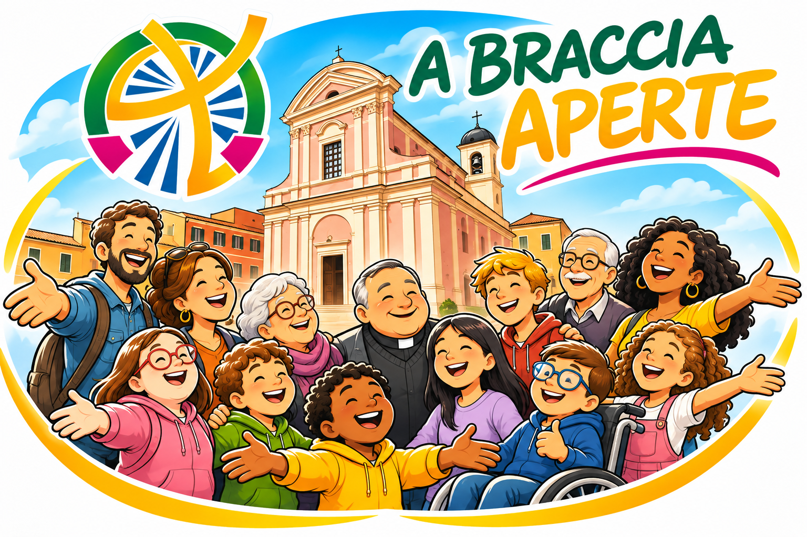

<!doctype html>
<html lang="it" data-theme="vivace">
<head>
  <meta charset="utf-8">
  <meta name="viewport" content="width=device-width, initial-scale=1, viewport-fit=cover">
  <meta name="theme-color" content="#116962">
  <meta name="description" content="App della Parrocchia San Giovanni di Nettuno, con liturgia quotidiana CEI, Santo del giorno, Liturgia delle Ore, calendari catechesi e canti.">
  <link rel="manifest" href="./manifest.webmanifest">
  <link rel="icon" type="image/svg+xml" href="./icon.svg">
  <title>San Giovanni · Nettuno — La nostra comunità</title>
  <style>
    :root {--forest:#21473d; --forest2:#345d4c; --forestdeep:#143b32; --cream:#f8f7f3; --paper:#fffefa; --sand:#f2eee7; --ink:#27342e; --muted:#7b8178; --line:#e9e6df; --amber:#bd8552; --amberlight:#f7e9d8; --blue:#496f8f; --bluepale:#e9f0f5; --shadow:0 12px 32px rgba(36,48,40,.055); --radius:18px}
    *,*::before,*::after {box-sizing:border-box}
    html {scroll-behavior:smooth}
    body {margin:0; color:var(--ink); background:var(--cream);font-family:Inter,-apple-system,BlinkMacSystemFont,"Segoe UI",Roboto,Arial,sans-serif; -webkit-font-smoothing:antialiased}
    button,input,textarea,select {font:inherit}
    button {cursor:pointer}
    a {color:inherit;text-decoration:none}
    :focus-visible {outline:3px solid #c69a5e; outline-offset:2px}
    .app {min-height:100vh;display:grid;grid-template-columns:258px minmax(0,1fr)}
    .sidebar {position:sticky;top:0;height:100vh;overflow:auto;background:var(--paper);border-right:1px solid var(--line);padding:30px 20px 20px;display:flex;flex-direction:column;gap:20px}
    .brand {display:flex;align-items:center;gap:12px;padding:0 6px 15px}
    .brand-icon {display:grid;place-items:center;border-radius:16px;width:50px;height:50px;min-width:50px;background:var(--forest);color:#fff}
    .brand-name {font:700 19px/1.05 Georgia,"Times New Roman",serif;letter-spacing:-.3px}
    .brand-sub {font-size:11px;letter-spacing:1.7px;text-transform:uppercase;color:#888b83;margin-top:6px}
    .navlabel {font-size:10px;letter-spacing:1.7px;font-weight:750;color:#a09f97;text-transform:uppercase;padding:0 14px;margin:6px 0 5px}
    .nav {display:flex;flex-direction:column;gap:5px}
    .navlink {border:0;background:none;color:#667269;text-align:left;display:flex;gap:13px;align-items:center;border-radius:11px;padding:12px 14px;min-height:44px;font-weight:600;font-size:13px;width:100%;transition:.18s ease}
    .navlink:hover {background:#f4f2ec;color:var(--forest)}
    .navlink.active {background:#e7eee9;color:var(--forest);font-weight:750}
    .navlink svg {opacity:.85;flex:none}
    .side-foot {margin-top:auto;border-top:1px solid var(--line);padding:15px 8px 0;display:flex;flex-direction:column;gap:10px;color:#8a8c84;font-size:11px;line-height:1.5}
    .tag-demo {display:inline-flex;gap:6px;align-items:center;align-self:flex-start;color:var(--forest);border:1px solid #d4dfd6;padding:6px 9px;border-radius:8px;font-size:10px;font-weight:750;letter-spacing:.4px}
    .main {min-width:0;padding:0 42px 70px}
    .topbar {height:92px;display:flex;justify-content:space-between;align-items:center;gap:16px;border-bottom:1px solid var(--line);max-width:1220px;margin:0 auto}
    .overline {font-size:10px;letter-spacing:2px;text-transform:uppercase;color:var(--amber);font-weight:850}
    .top-head {font-size:14px;font-weight:700;margin-top:4px}
    .top-right {display:flex;align-items:center;gap:10px}
    .today-chip {font-size:12px;color:#7b8177;white-space:nowrap;margin-right:4px}
    .icon-btn {border:1px solid var(--line);background:var(--paper);width:39px;height:39px;display:grid;place-items:center;border-radius:12px;color:var(--forest)}
    .avatar {width:39px;height:39px;border-radius:12px;background:#e6eadd;display:grid;place-items:center;color:var(--forest);font-weight:800;font-size:12px}
    .content {max-width:1220px;margin:0 auto;padding-top:34px}
    .page-title {font:700 clamp(30px,3.4vw,42px)/1.14 Georgia,"Times New Roman",serif;letter-spacing:-1.1px;margin:10px 0 12px}
    .page-intro {font-size:14px;line-height:1.7;color:#727a70;max-width:740px;margin:0 0 30px}
    .section-heading {display:flex;align-items:end;justify-content:space-between;gap:12px;margin:27px 0 16px}
    .section-heading h2 {margin:0;font:700 24px/1.1 Georgia,"Times New Roman",serif;letter-spacing:-.5px}
    .section-heading p {margin:6px 0 0;color:var(--muted);font-size:12px}
    .text-btn {border:0;background:none;color:var(--forest);font-size:12px;font-weight:750;display:inline-flex;gap:6px;align-items:center;white-space:nowrap;padding:8px}
    .text-btn:hover {text-decoration:underline}
    .hero {background:linear-gradient(115deg,#194436 0%,#2f5a48 66%,#416b53 100%);color:white;border-radius:22px;min-height:286px;display:grid;grid-template-columns:minmax(0,1.4fr) minmax(200px,.65fr);overflow:hidden;position:relative;box-shadow:0 20px 42px rgba(31,74,53,.12)}
    .hero::before {content:'';position:absolute;inset:-190px -160px auto auto;border:1px solid rgba(255,255,255,.13);width:480px;height:480px;border-radius:100%}
    .hero::after {content:'';position:absolute;inset:-155px -120px auto auto;border:1px solid rgba(255,255,255,.16);width:380px;height:380px;border-radius:100%}
    .hero-copy {padding:42px 40px;position:relative;z-index:1;max-width:650px}
    .hero-eyebrow {display:flex;align-items:center;gap:8px;font-size:10px;font-weight:800;letter-spacing:2px;text-transform:uppercase;color:#d6c7a6}
    .hero-eyebrow::before {content:'';width:16px;height:1px;background:#d6c7a6}
    .hero h1 {font:700 clamp(36px,3.4vw,53px)/1.06 Georgia,"Times New Roman",serif;letter-spacing:-1.6px;margin:22px 0 13px}
    .hero p {font-size:14px;max-width:440px;color:#dce8dc;line-height:1.75;margin:0 0 24px}
    .btn {display:inline-flex;justify-content:center;align-items:center;gap:9px;padding:12px 17px;border-radius:11px;border:1px solid transparent;font-size:12px;font-weight:800;min-height:42px;transition:.16s ease}
    .btn:hover {transform:translateY(-1px)}
    .btn-primary {background:var(--forest);color:white}
    .btn-light {background:#fffdf6;color:var(--forest)}
    .btn-outline {background:transparent;border-color:#cddbd0;color:var(--forest)}
    .btn-ghost {background:#f2f2ed;color:var(--forest)}
    .btn-danger {background:#fff1ef;color:#ae5447}
    .hero-art {position:relative;display:flex;align-items:center;justify-content:center;z-index:1;min-height:220px;padding:18px 20px 18px 0}
    .hero-art img {width:100%;height:100%;max-height:250px;object-fit:contain;display:block;filter:drop-shadow(0 14px 28px rgba(10,46,42,.18))}
    .grid4 {display:grid;grid-template-columns:repeat(4,minmax(0,1fr));gap:16px}
    .quick-tile {background:var(--paper);border:1px solid var(--line);border-radius:16px;text-align:left;padding:18px 16px;min-height:126px;display:flex;flex-direction:column;align-items:flex-start;justify-content:space-between;gap:16px;box-shadow:var(--shadow);transition:.2s ease}
    .quick-tile:hover {border-color:#c6d2c7;transform:translateY(-2px)}
    .quick-icon {width:37px;height:37px;border-radius:10px;background:#edf1e8;color:var(--forest);display:grid;place-items:center}
    .quick-title {font-size:13px;font-weight:760}
    .quick-sub {font-size:10px;color:#969b90;margin-top:4px}
    .split {display:grid;grid-template-columns:minmax(0,1.5fr) minmax(280px,.86fr);gap:20px}
    .panel {background:var(--paper);border:1px solid var(--line);border-radius:18px;padding:24px;box-shadow:var(--shadow)}
    .panel-header {display:flex;justify-content:space-between;align-items:center;gap:10px;margin-bottom:18px}
    .panel-header h3 {margin:0;font:700 21px/1.2 Georgia,"Times New Roman",serif}
    .notice-row {display:flex;gap:15px;align-items:flex-start;padding:17px 0;border-bottom:1px solid #efede7}
    .notice-row:last-child {border-bottom:none;padding-bottom:0}
    .mini-date {width:48px;min-width:48px;min-height:52px;text-align:center;background:#f5f2eb;border-radius:10px;padding:7px 2px;color:var(--forest)}
    .mini-date strong {display:block;font-size:20px;line-height:1.3}
    .mini-date span {display:block;color:#8d8a7f;font-size:9px;letter-spacing:1px;font-weight:700;text-transform:uppercase}
    .notice-body {flex:1;min-width:0}
    .notice-body h4 {margin:6px 0;font-size:13px;line-height:1.4}
    .notice-body p {margin:0;color:#81877e;font-size:12px;line-height:1.6}
    .notice-row button.open {border:0;background:none;color:var(--forest);padding:5px;margin-top:13px}
    .category {font-size:9px;letter-spacing:.8px;text-transform:uppercase;color:#647968;font-weight:850}
    .event-panel {background:#f2ece1;border:1px solid #ede6d8;display:flex;flex-direction:column;gap:12px}
    .event-date {display:flex;gap:10px;align-items:center;color:var(--amber);font-size:11px;letter-spacing:1px;font-weight:850;text-transform:uppercase}
    .event-panel h3 {margin:0;font:700 29px/1.2 Georgia,"Times New Roman",serif;color:var(--forest)}
    .event-panel p {font-size:12px;line-height:1.7;color:#7f7c70;margin:0}
    .event-meta {display:flex;align-items:center;gap:10px;color:var(--forest);font-size:12px;font-weight:650;margin-top:auto}
    .event-meta svg {color:var(--amber)}
    .soft-note {display:flex;align-items:flex-start;gap:9px;padding:12px 14px;border:1px solid #e5e9df;background:#eff3ed;color:#607565;border-radius:10px;font-size:11px;line-height:1.65}
    .soft-note svg {flex:none;margin-top:1px}
    .notice-banner {display:flex;gap:9px;align-items:center;margin-bottom:24px;color:#947b59;background:#faf3e8;padding:12px 15px;border:1px solid #f0e4d1;border-radius:10px;font-size:11px;line-height:1.5}
    .notice-banner svg {flex:none}
    .stats-row {display:grid;grid-template-columns:repeat(3,1fr);gap:15px;margin-bottom:25px}
    .stat {padding:21px;border-radius:16px;background:var(--paper);border:1px solid var(--line)}
    .stat-val {font:700 30px Georgia,serif;color:var(--forest)}
    .stat-text {font-size:12px;color:#8c9289;margin-top:6px}
    .search-line {display:flex;gap:12px;align-items:center;flex-wrap:wrap;margin-bottom:20px}
    .input-wrap {display:flex;align-items:center;gap:10px;border:1px solid #e5e4dd;border-radius:12px;background:white;padding:0 13px;min-height:45px;flex:1;min-width:220px;color:#879086}
    .input-wrap input {border:0;outline:0;min-width:0;flex:1;font-size:13px;background:transparent}
    .filters {display:flex;align-items:center;gap:6px;flex-wrap:wrap}
    .pill {border:1px solid #e5e6dd;border-radius:30px;background:white;color:#8a8d83;padding:9px 13px;font-size:11px;font-weight:700}
    .pill.active {background:var(--forest);color:white;border-color:var(--forest)}
    .cards2 {display:grid;grid-template-columns:repeat(2,minmax(0,1fr));gap:15px}
    .info-card {border-radius:16px;padding:22px;border:1px solid var(--line);background:var(--paper);box-shadow:var(--shadow);display:flex;flex-direction:column;gap:11px}
    .info-card h3 {margin:0;font:700 20px/1.3 Georgia,serif}
    .info-card p {font-size:12px;line-height:1.7;color:#81877e;margin:0;flex:1}
    .meta-line {font-size:11px;color:#8e938b;display:flex;gap:7px;align-items:center}
    .card-footer {display:flex;align-items:center;justify-content:space-between;gap:10px;margin-top:12px}
    .calendar-shell {background:var(--paper);border:1px solid var(--line);border-radius:17px;padding:22px;min-width:0}
    .calendar-top {display:flex;justify-content:space-between;align-items:center;margin-bottom:24px}
    .calendar-top h2 {margin:0;font:700 23px Georgia,serif}
    .cal-buttons {display:flex;gap:7px}
    .calendar-grid {display:grid;grid-template-columns:repeat(7,minmax(0,1fr));gap:6px}
    .weekday {font-size:10px;font-weight:800;text-align:center;color:#959a90;padding:5px 0 12px;text-transform:uppercase;letter-spacing:.4px}
    .cal-day {border:1px solid transparent;min-height:70px;border-radius:10px;background:#fbfaf7;color:#4f6658;text-align:left;padding:9px 10px;font-size:12px;font-weight:750;display:flex;flex-direction:column;justify-content:space-between;align-items:flex-start}
    .cal-day:hover {background:#edf1e9}
    .cal-day.blank {background:transparent;pointer-events:none}
    .cal-day.has-event {background:#f0f4ee}
    .cal-day.selected {background:var(--forest);color:#fff}
    .cal-day .dots {display:flex;gap:3px}
    .dot {width:5px;height:5px;border-radius:50%;background:var(--amber)}
    .cal-day.selected .dot {background:#e5c594}
    .calendar-layout {display:grid;grid-template-columns:minmax(0,1.8fr) minmax(270px,.85fr);gap:16px}
    .day-events {background:var(--paper);border:1px solid var(--line);border-radius:17px;padding:22px;min-height:325px}
    .day-events h3 {font:700 21px Georgia,serif;margin:0 0 19px}
    .day-evt {border-left:3px solid var(--amber);padding:9px 0 9px 13px;margin-bottom:12px}
    .day-evt strong {font-size:12px;display:block;margin-bottom:5px}
    .day-evt p {font-size:11px;color:#859085;line-height:1.6;margin:0}
    .empty-state {text-align:center;color:#90988e;padding:35px 15px;font-size:12px;line-height:1.7}
    .empty-state svg {margin-bottom:14px}
    .time-card {display:flex;gap:17px;align-items:center;padding:21px;border:1px solid var(--line);border-radius:15px;background:var(--paper);margin-bottom:12px}
    .time-icon {width:47px;height:47px;display:grid;place-items:center;background:#edf1e8;color:var(--forest);border-radius:13px;flex:none}
    .time-card h3 {margin:0 0 6px;font-size:14px}
    .time-card p {margin:0;color:#858c82;font-size:12px;line-height:1.7}
    .time-side {margin-left:auto;font-size:12px;font-weight:800;white-space:nowrap;color:var(--forest)}
    .song-card {background:var(--paper);border:1px solid var(--line);border-radius:15px;padding:18px;display:flex;gap:14px;align-items:center}
    .song-symbol {display:grid;place-items:center;width:45px;height:45px;border-radius:12px;flex:none;background:var(--amberlight);color:#aa7848}
    .song-main {flex:1;min-width:0}
    .song-main h3 {margin:0 0 5px;font-size:13px}
    .song-main p {margin:0;color:#8f968d;font-size:11px;line-height:1.6}
    .heart-btn {border:0;background:none;color:#a2a69d;display:grid;place-items:center;padding:8px}
    .heart-btn.active {color:#c27d57}
    .article {background:var(--paper);border:1px solid var(--line);border-radius:18px;padding:clamp(22px,4vw,44px);max-width:780px}
    .article h2 {font:700 31px/1.25 Georgia,serif;letter-spacing:-.7px;margin:10px 0 20px;color:var(--forest)}
    .article p {font:16px/1.95 Georgia,serif;color:#626b61;margin:15px 0}
    .quote-box {border-left:3px solid var(--amber);background:#faf4e8;padding:24px;margin:28px 0;font:italic 20px/1.65 Georgia,serif;color:var(--forest)}
    .family-card {background:linear-gradient(120deg,#245244,#456b54);border-radius:18px;padding:30px;color:#fff;display:grid;grid-template-columns:1fr auto;align-items:center;gap:15px;margin-bottom:24px}
    .family-card h2 {margin:9px 0;font:700 26px Georgia,serif}
    .family-card p {margin:0;color:#d6e6d9;font-size:12px;line-height:1.75;max-width:520px}
    .group-mini {display:flex;gap:13px;align-items:center;justify-content:space-between;padding:16px;border:1px solid var(--line);border-radius:12px;background:white;margin-bottom:9px}
    .group-name {font-weight:760;font-size:13px}
    .group-detail {color:#92998d;font-size:11px;margin-top:5px;line-height:1.5}
    .label-tag {display:inline-block;border:1px solid #dbe5db;background:#ecf2eb;color:var(--forest);font-size:10px;font-weight:750;padding:6px 9px;border-radius:8px;white-space:nowrap}
    .form-grid {display:grid;grid-template-columns:1fr 1fr;gap:14px}
    .field {display:flex;flex-direction:column;gap:6px}
    .field.full {grid-column:1/-1}
    .field label {font-size:11px;font-weight:800;color:#53665a}
    .field input,.field textarea,.field select {width:100%;border:1px solid #dedfd7;border-radius:10px;background:#fff;padding:12px 13px;font-size:13px;color:var(--ink);outline:none}
    .field textarea {resize:vertical;min-height:115px}
    .field input:focus,.field textarea:focus,.field select:focus {border-color:#759484;box-shadow:0 0 0 3px #edf3ef}
    .form-actions {display:flex;align-items:center;gap:10px;flex-wrap:wrap;margin-top:16px}
    .donation-card {padding:27px;border-radius:17px;background:var(--paper);border:1px solid var(--line);display:flex;flex-direction:column;gap:12px}
    .donation-card .big-ic {color:var(--forest);background:#edf1e8;width:50px;height:50px;display:grid;place-items:center;border-radius:14px}
    .donation-card h3 {font:700 22px Georgia,serif;margin:0}
    .donation-card p {color:#828980;line-height:1.7;font-size:12px;margin:0;flex:1}
    .donation-card .btn {margin-top:10px;align-self:start}
    .modal-backdrop {position:fixed;inset:0;z-index:20;background:rgba(20,35,28,.52);display:grid;place-items:center;padding:20px;overflow-y:auto}
    .modal {background:var(--paper);padding:28px;border-radius:18px;max-width:520px;width:100%;box-shadow:0 22px 70px rgba(12,29,19,.25);position:relative}
    .modal h2 {font:700 28px/1.2 Georgia,serif;margin:12px 25px 16px 0}
    .modal p {line-height:1.8;color:#68746a;font-size:13px}
    .modal .close {position:absolute;right:18px;top:18px}
    .toast {pointer-events:none;position:fixed;bottom:28px;right:27px;z-index:30;display:flex;align-items:center;gap:10px;background:var(--forestdeep);color:white;box-shadow:0 16px 30px rgba(20,60,43,.2);padding:14px 18px;border-radius:11px;font-size:12px;max-width:340px}
    .mobile-head,.bottom-nav,.more-menu {display:none}
    .minor {font-size:11px;line-height:1.7;color:#92988f}
    .pt0 {padding-top:0}.mt0 {margin-top:0}.mb0{margin-bottom:0}.mb20{margin-bottom:20px}.mt20{margin-top:20px}
    @media(max-width:1100px){.main {padding:0 24px 60px}.sidebar{width:225px;padding:26px 14px}.app{grid-template-columns:225px minmax(0,1fr)}.hero {grid-template-columns:1fr 210px}.hero-copy{padding:35px}.split{grid-template-columns:1.4fr 1fr}.hero h1{font-size:41px}}
    @media(max-width:850px){.sidebar{display:none}.app{display:block}.main{padding:0 18px 105px}.topbar{height:73px}.topbar .today-chip{display:none}.content{padding-top:21px}.hero{grid-template-columns:1fr 190px;min-height:250px}.hero-copy{padding:27px}.hero h1{font-size:34px}.hero-art img{max-height:205px}.grid4{grid-template-columns:repeat(2,minmax(0,1fr))}.split{grid-template-columns:1fr 1fr}.calendar-layout{grid-template-columns:1fr}.bottom-nav{display:flex;position:fixed;bottom:0;left:0;right:0;z-index:9;background:rgba(255,254,250,.96);border-top:1px solid var(--line);justify-content:space-around;padding:7px 6px calc(9px + env(safe-area-inset-bottom));box-shadow:0 -12px 28px rgba(27,46,31,.035);backdrop-filter:blur(12px)}.bottom-nav button{background:transparent;border:0;display:flex;flex-direction:column;align-items:center;gap:5px;justify-content:center;color:#969e93;font-size:9px;font-weight:800;padding:6px 9px;min-width:57px}.bottom-nav button.active{color:var(--forest)}.more-menu{display:flex;flex-direction:column;position:fixed;z-index:10;bottom:76px;left:12px;right:12px;background:var(--paper);border:1px solid var(--line);border-radius:15px;box-shadow:0 12px 45px rgba(19,41,27,.17);padding:12px;gap:5px}.more-menu[hidden]{display:none}.more-menu button{display:flex;align-items:center;gap:12px;border:0;padding:13px;border-radius:10px;background:transparent;text-align:left;color:var(--forest);font-size:13px;font-weight:700}.more-menu button:hover{background:#edf1e8}}
    @media(max-width:600px){.main{padding-left:16px;padding-right:16px}.topbar{height:68px}.top-head{font-size:12px}.brand-icon{width:41px;height:41px;min-width:41px}.top-right{gap:7px}.content{padding-top:20px}.hero{grid-template-columns:1fr;min-height:0}.hero-copy{padding:29px 25px 12px}.hero h1{font-size:39px;margin:17px 0 10px}.hero p{font-size:12px}.hero-art{display:flex;padding:0 20px 20px;min-height:0}.hero-art img{max-height:none;width:100%;height:auto}.page-title{font-size:33px}.page-intro{font-size:12px}.section-heading h2{font-size:21px}.section-heading{margin-top:25px}.quick-tile{min-height:113px;padding:16px}.split{grid-template-columns:1fr}.panel{padding:21px}.stats-row{grid-template-columns:1fr 1fr}.stats-row .stat:last-child{grid-column:1/-1}.cards2{grid-template-columns:1fr}.calendar-shell,.day-events{padding:13px}.cal-day{min-height:51px;padding:6px;font-size:11px}.calendar-grid{gap:3px}.weekday{font-size:9px}.family-card{grid-template-columns:1fr}.time-card{padding:15px;gap:12px}.time-side{margin-left:auto;font-size:11px}.form-grid{grid-template-columns:1fr}.field.full{grid-column:auto}.notice-banner{font-size:10px}.article{padding:22px}.article p{font-size:15px}.topbar .avatar{display:none}}


    /* Stile alternativo: moderno, vivace, luminoso. Non altera la navigazione. */
    .theme-switch {display:inline-flex;align-items:center;gap:8px;justify-content:center;min-height:39px;padding:0 13px;border:1px solid var(--line);background:var(--paper);color:var(--forest);border-radius:12px;font-size:11px;font-weight:800;white-space:nowrap;box-shadow:0 2px 8px rgba(15,52,50,.04);transition:background .2s,border .2s,transform .2s}
    .theme-switch:hover {transform:translateY(-1px);background:var(--sand)}
    .theme-switch .theme-dot {width:10px;height:10px;flex:none;border-radius:50%;background:linear-gradient(135deg,#ffbb68 0%,#fa7a65 52%,#65c7ba 100%);box-shadow:0 0 0 3px rgba(247,161,105,.16)}
    @media(max-width:600px){.theme-switch{width:39px;padding:0;font-size:0;gap:0}.theme-switch .theme-dot{width:14px;height:14px}.topbar>.top-right{flex-shrink:0}.topbar>div:first-child{min-width:0}.topbar .overline{font-size:9px;letter-spacing:1px;white-space:nowrap;overflow:hidden;text-overflow:ellipsis;max-width:220px}.topbar .icon-btn{width:36px;height:36px}.topbar .top-head{font-size:11px}}

    html[data-theme="vivace"] {
      --forest:#116962;--forest2:#14887d;--forestdeep:#10494c;
      --cream:#f5f7f7;--paper:#ffffff;--sand:#f0f7f4;
      --ink:#1d3e43;--muted:#71818a;--line:#e2eaea;
      --amber:#dc764f;--amberlight:#fff0e7;--blue:#3d7ead;--bluepale:#eaf4ff;
      --shadow:0 8px 32px rgba(28,67,71,.060);--radius:22px;
    }
    html[data-theme="vivace"] body {background:radial-gradient(ellipse 70% 350px at 83% 0%,rgba(148,226,212,.20),transparent 74%),radial-gradient(ellipse 30% 330px at 17% 25%,rgba(255,214,188,.12),transparent 78%),var(--cream);color:var(--ink)}
    html[data-theme="vivace"] .sidebar {background:#fff;border-color:#e7eeeb;padding-top:26px;box-shadow:3px 0 40px rgba(19,79,72,.025)}
    html[data-theme="vivace"] .brand {margin:0 0 2px;padding-bottom:23px;border-bottom:1px solid #eef1ec}
    html[data-theme="vivace"] .brand-icon {background:linear-gradient(150deg,#0b786f 4%,#2fae9a 100%);border-radius:17px;box-shadow:0 8px 18px rgba(13,118,106,.22);transform:rotate(-3deg)}
    html[data-theme="vivace"] .brand-icon svg {transform:rotate(3deg)}
    html[data-theme="vivace"] .brand-name {font-family:Inter,-apple-system,BlinkMacSystemFont,'Segoe UI',Arial,sans-serif;font-size:18px;font-weight:850;letter-spacing:-.6px}
    html[data-theme="vivace"] .brand-sub {color:var(--amber);font-weight:850}
    html[data-theme="vivace"] .navlabel {color:#97a6aa;letter-spacing:1.65px}
    html[data-theme="vivace"] .navlink {font-size:13px;border:1px solid transparent;border-radius:13px;padding:12px 13px;color:#668084}
    html[data-theme="vivace"] .navlink:hover {background:#eff8f6;color:#0d726c}
    html[data-theme="vivace"] .navlink.active {background:linear-gradient(105deg,#dcf6ed 0%,#ecf9f7 90%);border-color:#d6eee8;color:#0b7068;box-shadow:inset 3px 0 0 #25ac97}
    html[data-theme="vivace"] .tag-demo {background:#eff8f4;border-color:#d7ece5;color:#1a776d}
    html[data-theme="vivace"] .topbar {border-bottom-color:#e2eae9}
    html[data-theme="vivace"] .overline {color:#cb7650}
    html[data-theme="vivace"] .top-head {font-weight:750;color:#3c6264}
    html[data-theme="vivace"] .today-chip {color:#849495}
    html[data-theme="vivace"] .theme-switch {border-color:#cce9e2;background:#e9f8f1;color:#167c71}
    html[data-theme="vivace"] .avatar {background:#dff7ef;color:#07776d;border-radius:13px}
    html[data-theme="vivace"] .icon-btn {border-radius:13px;box-shadow:0 3px 14px rgba(19,67,70,.05)}
    html[data-theme="vivace"] .content {padding-top:33px}
    html[data-theme="vivace"] .page-title,html[data-theme="vivace"] .section-heading h2,html[data-theme="vivace"] .panel-header h3,html[data-theme="vivace"] .info-card h3,html[data-theme="vivace"] .stat-val,html[data-theme="vivace"] .donation-card h3,html[data-theme="vivace"] .calendar-top h2,html[data-theme="vivace"] .day-events h3 {font-family:Inter,-apple-system,BlinkMacSystemFont,'Segoe UI',Arial,sans-serif;letter-spacing:-.85px;font-weight:800}
    html[data-theme="vivace"] .section-heading h2 {font-size:23px}
    html[data-theme="vivace"] .page-title {letter-spacing:-1.45px}
    html[data-theme="vivace"] .hero {background:radial-gradient(ellipse 220px 280px at 91% 16%,rgba(255,191,134,.3),transparent 82%),radial-gradient(ellipse 250px 210px at 64% 95%,rgba(116,210,177,.18),transparent 83%),linear-gradient(116deg,#075b61 0%,#147981 65%,#258a80 100%);border-radius:27px;box-shadow:0 18px 38px rgba(8,97,99,.16);min-height:296px}
    html[data-theme="vivace"] .hero::before {border:1px solid rgba(255,237,194,.32);width:420px;height:420px;inset:-180px -135px auto auto}
    html[data-theme="vivace"] .hero::after {border:1px solid rgba(255,237,194,.17);width:335px;height:335px;inset:-139px -96px auto auto}
    html[data-theme="vivace"] .hero-copy {padding:44px 42px}
    html[data-theme="vivace"] .hero h1 {font-family:Inter,-apple-system,BlinkMacSystemFont,'Segoe UI',Arial,sans-serif;font-weight:850;font-size:clamp(36px,3.4vw,49px);line-height:1.12;letter-spacing:-2.3px;margin:19px 0 13px}
    html[data-theme="vivace"] .hero p {color:#e1f5f1;font-size:14px}
    html[data-theme="vivace"] .hero-eyebrow {color:#ffe6b9;letter-spacing:1.4px}
    html[data-theme="vivace"] .hero-eyebrow::before {width:20px;height:3px;border-radius:3px;background:#ffc08d}
    html[data-theme="vivace"] .hero-art {opacity:1;transform:none}
    html[data-theme="vivace"] .hero-art img {filter:drop-shadow(0 10px 24px rgba(4,67,70,.17))}
    html[data-theme="vivace"] .btn {border-radius:12px;font-size:12px}
    html[data-theme="vivace"] .btn-primary {background:#08776d;box-shadow:0 5px 15px rgba(4,96,92,.12)}
    html[data-theme="vivace"] .btn-light {background:#fffdf7;color:#146e66;box-shadow:0 8px 16px rgba(12,62,66,.13)}
    html[data-theme="vivace"] .btn-outline {background:white;border-color:#b6dad4}
    html[data-theme="vivace"] .btn-ghost {background:#ecf7f3}
    html[data-theme="vivace"] .quick-tile {position:relative;border:1px solid #e8eeed;border-radius:20px;box-shadow:0 6px 22px rgba(28,67,71,.048);padding:18px;min-height:139px;overflow:hidden}
    html[data-theme="vivace"] .quick-tile::after {content:'';position:absolute;top:-30px;right:-27px;width:88px;height:88px;border:2px solid rgba(21,112,102,.12);border-radius:50%;pointer-events:none}
    html[data-theme="vivace"] .quick-tile:nth-child(1) {background:linear-gradient(140deg,#fff7f0,#ffffff 68%)}
    html[data-theme="vivace"] .quick-tile:nth-child(2) {background:linear-gradient(140deg,#eff7ff,#ffffff 68%)}
    html[data-theme="vivace"] .quick-tile:nth-child(3) {background:linear-gradient(140deg,#f7f1ff,#ffffff 68%)}
    html[data-theme="vivace"] .quick-tile:nth-child(4) {background:linear-gradient(140deg,#edfaf3,#ffffff 68%)}
    html[data-theme="vivace"] .quick-tile:hover {border-color:#a7dbcf;box-shadow:0 12px 26px rgba(33,106,96,.10);transform:translateY(-3px)}
    html[data-theme="vivace"] .quick-icon {border-radius:13px;width:43px;height:43px}
    html[data-theme="vivace"] .quick-tile:nth-child(1) .quick-icon {background:#ffe6d9;color:#c46a43}
    html[data-theme="vivace"] .quick-tile:nth-child(2) .quick-icon {background:#deedff;color:#4279aa}
    html[data-theme="vivace"] .quick-tile:nth-child(3) .quick-icon {background:#eee2ff;color:#8861af}
    html[data-theme="vivace"] .quick-tile:nth-child(4) .quick-icon {background:#d7f3e5;color:#168476}
    html[data-theme="vivace"] .quick-title {font-size:14px;color:#1d4547;font-weight:820}
    html[data-theme="vivace"] .quick-sub {font-size:11px;color:#829293}
    html[data-theme="vivace"] .panel,html[data-theme="vivace"] .info-card,html[data-theme="vivace"] .stat,html[data-theme="vivace"] .calendar-shell,html[data-theme="vivace"] .day-events,html[data-theme="vivace"] .time-card,html[data-theme="vivace"] .donation-card,html[data-theme="vivace"] .article,html[data-theme="vivace"] .song-card {border-radius:21px;border-color:#e6efef;box-shadow:var(--shadow)}
    html[data-theme="vivace"] .panel-header h3 {font-size:20px}
    html[data-theme="vivace"] .notice-row {border-color:#eaf0ef}
    html[data-theme="vivace"] .mini-date {background:#e8f7f2;color:#0f7c6e;border-radius:13px}
    html[data-theme="vivace"] .mini-date span {color:#4e9c8d}
    html[data-theme="vivace"] .category {color:#178c7a}
    html[data-theme="vivace"] .notice-body h4 {color:#25494d}
    html[data-theme="vivace"] .event-panel {background:radial-gradient(circle at 100% 0%,rgba(255,214,179,.55),transparent 52%),linear-gradient(160deg,#fff4e8,#fff8f2);border-color:#f9e6d6;box-shadow:0 8px 26px rgba(186,109,64,.05)}
    html[data-theme="vivace"] .event-panel h3 {font-family:Inter,-apple-system,BlinkMacSystemFont,'Segoe UI',Arial,sans-serif;font-weight:850;line-height:1.22;font-size:27px;letter-spacing:-1px;color:#284f4d}
    html[data-theme="vivace"] .event-panel .btn-primary {background:#ce7952}
    html[data-theme="vivace"] .notice-banner {background:#fff6ee;border-color:#ffe6d6;color:#987154;border-radius:13px}
    html[data-theme="vivace"] .soft-note {background:#edf9f5;border-color:#d5eee6;color:#447e71;border-radius:13px}
    html[data-theme="vivace"] .pill {border-radius:11px;border-color:#e0eae8;color:#66817d}
    html[data-theme="vivace"] .pill.active {background:#0e8276;border-color:#0e8276;color:white;box-shadow:0 5px 12px rgba(23,133,121,.13)}
    html[data-theme="vivace"] .input-wrap {border-color:#dbe8e6;border-radius:13px}
    html[data-theme="vivace"] .cal-day {background:#f5faf9;color:#34665e;border-radius:13px}
    html[data-theme="vivace"] .cal-day.has-event {background:#e5f7ef}
    html[data-theme="vivace"] .cal-day.selected {background:#0f7c72;color:white}
    html[data-theme="vivace"] .time-icon {background:#e4f7f1;color:#138775}
    html[data-theme="vivace"] .song-symbol {background:#f0e8ff;color:#8966b2}
    html[data-theme="vivace"] .family-card {background:radial-gradient(ellipse at 90% 20%,rgba(255,195,153,.21),transparent 43%),linear-gradient(112deg,#0a6570,#138d80);border-radius:24px}
    html[data-theme="vivace"] .family-card h2 {font-family:Inter,-apple-system,BlinkMacSystemFont,'Segoe UI',Arial,sans-serif;font-weight:850;letter-spacing:-1px}
    html[data-theme="vivace"] .article h2 {font-family:Inter,-apple-system,BlinkMacSystemFont,'Segoe UI',Arial,sans-serif;font-weight:850}
    html[data-theme="vivace"] .quote-box {border-left-color:#e28e66;background:#fff5ed}
    html[data-theme="vivace"] .modal {border-radius:24px}
    html[data-theme="vivace"] .modal h2 {font-family:Inter,-apple-system,BlinkMacSystemFont,'Segoe UI',Arial,sans-serif;font-weight:850}
    html[data-theme="vivace"] .toast {background:#0d6666}
    @media(max-width:850px){html[data-theme="vivace"] .bottom-nav{background:rgba(255,255,255,.97);box-shadow:0 -14px 30px rgba(20,91,90,.07)}html[data-theme="vivace"] .bottom-nav button.active{color:#0d8678}html[data-theme="vivace"] .bottom-nav button.active svg{stroke-width:2.4}html[data-theme="vivace"] .more-menu{border-radius:20px;border-color:#d8eae7}}
    @media(max-width:600px){html[data-theme="vivace"] .hero-copy{padding:31px 26px 32px}html[data-theme="vivace"] .hero h1{font-size:clamp(32px,9.4vw,40px);letter-spacing:-1.7px}html[data-theme="vivace"] .quick-tile{min-height:132px;padding:15px}html[data-theme="vivace"] .section-heading h2{font-size:21px}html[data-theme="vivace"] .panel{padding:21px}html[data-theme="vivace"] .event-panel h3{font-size:25px}}
    @media(max-width:600px){.theme-switch{width:auto;padding:0 10px;gap:7px;font-size:11px}.theme-switch .theme-dot{width:10px;height:10px}.topbar .icon-btn{display:none}.topbar .overline{max-width:235px}}
    @media (prefers-reduced-motion:reduce){html{scroll-behavior:auto}.btn,.quick-tile,.theme-switch,.navlink{transition:none!important}}

    /* Notifiche push: design coerente con lo stile vivace */
    .push-panel{display:flex;align-items:center;justify-content:space-between;gap:18px;flex-wrap:wrap;background:linear-gradient(110deg,#e5f8f1,#fff9f2);border:1px solid #dcefe8;border-radius:18px;padding:20px 22px;margin-bottom:22px}
    .push-panel h3{margin:4px 0 7px;font-weight:850;font-size:16px;color:var(--forest)}
    .push-panel p{font-size:12px;line-height:1.65;color:#627b7a;margin:0;max-width:650px}
    .push-panel .btn{white-space:nowrap}
    .push-symbol{width:40px;height:40px;border-radius:12px;display:grid;place-items:center;background:#d3f2e8;color:var(--forest);flex:none}
    .push-content{display:flex;gap:13px;align-items:flex-start;flex:1;min-width:230px}
    .push-subline{font-size:11px;color:#738784;margin-top:6px;line-height:1.5}
    html[data-theme="sobrio"] .push-panel{background:#f4f6f1;border-color:#e5e9de}
    @media(max-width:600px){.push-panel{padding:16px;gap:13px}.push-panel .btn{width:100%}}
    .admin-tabs{display:flex;flex-wrap:wrap;gap:9px;margin:20px 0}
    .admin-tabs .pill{display:inline-flex;align-items:center;gap:8px}
    .tab-count{opacity:.65;font-weight:700;font-size:10px}
    .admin-items{max-height:540px;overflow:auto}
    .admin-entry{display:flex;align-items:flex-start;justify-content:space-between;gap:10px;padding:13px 0;border-bottom:1px solid var(--line)}
    .admin-entry:last-child{border-bottom:0}
    .admin-entry-main{min-width:0;flex:1}
    .admin-entry h4{font-size:13px;margin:7px 0 3px;overflow-wrap:anywhere}
    .admin-entry p{color:#82908d;font-size:11px;margin:0}
    .admin-entry-buttons{display:flex;gap:5px}
    .admin-entry-buttons .icon-btn{width:34px;height:34px}
    .entry-status{border-radius:6px;padding:4px 7px;font-size:10px;font-weight:760}
    .entry-status.is-public{background:#e5f5ef;color:#08715f}
    .entry-status.is-draft{background:#fff1e2;color:#af7232}
    .publish-check{display:flex!important;align-items:flex-start;gap:11px;line-height:1.6;font-size:12px!important;cursor:pointer}
    .publish-check input{width:17px;height:17px;flex:none;accent-color:#08786e;margin-top:2px}
    .admin-access{max-width:650px;margin:25px auto;padding:34px}
    .admin-access h2{font-size:25px;margin:12px 0}
    .admin-access p{color:var(--muted);line-height:1.7;font-size:13px}
    .access-icon{background:#e2f4ee;color:#137e72;padding:16px;border-radius:18px;display:inline-flex}
    .login-inline{display:flex;gap:10px;margin-top:19px;flex-wrap:wrap}
    .login-inline input{border:1px solid var(--line);border-radius:10px;min-height:44px;padding:10px 14px;flex:1;min-width:200px}
    .login-inline input[type="password"]{min-width:170px}
    .login-help{font-size:11px;line-height:1.6;color:var(--muted);margin-top:13px}
    .inline-link{background:none;border:0;text-decoration:underline;color:inherit;padding:0 2px;cursor:pointer;font-size:inherit}
    @media(max-width:650px){.admin-access{padding:23px}.admin-tabs{gap:6px}.admin-tabs .pill{font-size:11px}}
  
    /* v6 - doppio calendario Messe + eccezioni liturgiche */
    .mass-day-box {margin-bottom:22px;background:linear-gradient(115deg,#f9fbf6,#faf5e9)}
    .mass-day-head {display:flex;align-items:center;justify-content:space-between;gap:22px;flex-wrap:wrap;margin-bottom:13px}
    .mass-day-head h2 {font:700 26px/1.3 Georgia,serif;color:var(--forest);margin:7px 0}
    .mass-day-head p {margin:0;font-size:12px;color:#7c867b}
    .mass-day-head .field {min-width:165px}
    .mass-times-list {display:flex;gap:9px;flex-wrap:wrap;align-items:center;justify-content:flex-end}
    .mass-time-chip {display:inline-flex;align-items:center;justify-content:center;border-radius:10px;padding:9px 12px;background:#eaf2ea;color:var(--forest);font-weight:800;min-width:60px;font-size:14px;white-space:nowrap}
    .mass-day-box>.mass-times-list {justify-content:flex-start}
    .mass-day-box .mass-time-chip {font-size:19px;background:var(--forest);color:white;padding:12px 18px}
    .mass-season-grid {display:grid;grid-template-columns:repeat(2,minmax(0,1fr));gap:16px}
    .mass-season {background:var(--paper);border:1px solid var(--line);border-radius:18px;padding:21px;box-shadow:var(--shadow)}
    .mass-season.is-current {border-color:#a0b9a3;box-shadow:0 0 0 2px rgba(79,117,91,.08)}
    .mass-season-top {display:flex;justify-content:space-between;gap:10px;align-items:start;margin-bottom:12px}
    .mass-season-top h3 {font:700 24px Georgia,serif;color:var(--forest);margin:8px 0 4px}
    .mass-season-row {display:flex;align-items:center;justify-content:space-between;gap:10px;padding:16px 0;border-top:1px solid var(--line)}
    .mass-season-row strong {font-size:13px;color:var(--ink)}
    .mass-special-layout {display:grid;grid-template-columns:minmax(0,1.55fr) minmax(245px,.85fr);gap:16px}
    .mass-special-row {display:flex;gap:10px;align-items:center;justify-content:space-between;padding:18px 0;border-bottom:1px solid var(--line)}
    .mass-special-row:first-child {padding-top:0}
    .mass-special-row:last-child {padding-bottom:0;border:0}
    .mass-special-date h3 {margin:5px 0;font-size:15px}
    .mass-special-date p {font-size:11px;color:#79857a;margin:6px 0 0;line-height:1.6}
    @media(max-width:900px){.mass-special-layout{grid-template-columns:1fr}.mass-season-row{flex-wrap:wrap}.mass-season-row .mass-times-list{justify-content:flex-start}}
    @media(max-width:610px){.mass-season-grid{grid-template-columns:1fr}.mass-special-row{flex-direction:column;align-items:flex-start}.mass-special-row .mass-times-list{justify-content:flex-start}.mass-day-head .field{width:100%}}


    /* v7 – repertori delle tre Messe: percorso categoria → momento → testo */
    .song-crumbs{display:flex;gap:9px;align-items:center;flex-wrap:wrap;margin:0 0 22px;color:var(--muted,#75847b);font-size:12px}
    .song-crumbs button{border:0;background:none;cursor:pointer;color:var(--forest,#23746d);font:inherit;font-weight:700;padding:5px 3px}
    .song-crumbs span{opacity:.58}
    .song-category-grid{display:grid;grid-template-columns:repeat(3,minmax(0,1fr));gap:17px}
    .song-service-card{background:var(--paper);border:1px solid var(--line);border-radius:22px;box-shadow:var(--shadow);padding:23px;display:flex;flex-direction:column;align-items:flex-start;text-align:left;min-height:204px;gap:12px;cursor:pointer;color:inherit;transition:transform .2s,border-color .2s}
    .song-service-card:hover,.song-slot-card:hover{transform:translateY(-3px);border-color:#9bbfba}
    .song-service-card:focus-visible,.song-slot-card:focus-visible{outline:3px solid #86c3b5;outline-offset:2px}
    .song-service-card .symbol{width:45px;height:45px;display:grid;place-items:center;border-radius:13px;background:#dcf2e9;color:#206961}
    .song-service-card:nth-child(2) .symbol{background:#fff0df;color:#a86535}
    .song-service-card:nth-child(3) .symbol{background:#eee7fa;color:#785a9c}
    .song-service-card .song-service-name{font-weight:800;font-size:18px;line-height:1.3}
    .song-service-card .song-service-hint{color:#78877d;font-size:12px;line-height:1.5;margin-top:auto}
    .song-slots-grid{display:grid;grid-template-columns:repeat(4,minmax(0,1fr));gap:13px}
    .song-slot-card{background:var(--paper);border:1px solid var(--line);border-radius:17px;min-height:138px;padding:19px 14px;display:flex;flex-direction:column;align-items:flex-start;text-align:left;gap:9px;cursor:pointer;color:inherit;transition:transform .2s,border-color .2s}
    .song-slot-card:nth-child(4n+2){background:linear-gradient(140deg,var(--paper),#fffaf4)}
    .song-slot-card:nth-child(4n+3){background:linear-gradient(140deg,var(--paper),#f6f4fd)}
    .song-slot-card .song-slot-title{font-size:15px;font-weight:800}
    .song-slot-card .song-slot-count{margin-top:auto;color:#79867b;font-size:12px}
    .song-lyrics-list{display:grid;gap:18px;max-width:850px}
    .song-lyrics-card{background:var(--paper);border:1px solid var(--line);border-radius:20px;padding:26px;box-shadow:var(--shadow)}
    .song-lyrics-card h3{margin:0 0 6px;font-size:21px;line-height:1.35}
    .song-lyrics-card .song-lyrics{white-space:pre-wrap;font-size:16px;line-height:1.95;font-family:Georgia,serif;color:var(--ink);padding:16px 0 5px;overflow-wrap:anywhere}
    .song-lyrics-empty{color:#76857e;font-size:13px;padding:14px 0}
    .song-lyrics-card .song-foot{display:flex;align-items:center;justify-content:space-between;gap:10px;margin-top:10px}
    .song-admin-help{font-size:12px;line-height:1.6;color:#78867e;background:var(--mist,#edf7f5);padding:12px 15px;border-radius:12px;margin:0 0 14px}
    @media(max-width:950px){.song-category-grid{grid-template-columns:1fr 1fr}.song-slots-grid{grid-template-columns:repeat(2,minmax(0,1fr))}}
    @media(max-width:610px){.song-category-grid{grid-template-columns:1fr}.song-service-card{min-height:150px}.song-slots-grid{grid-template-columns:repeat(2,minmax(0,1fr));gap:10px}.song-slot-card{min-height:125px;padding:15px}.song-lyrics-card{padding:20px}.song-lyrics-card .song-lyrics{font-size:17px}}


    /* v9 • blocchi straordinari, editor canti, amministrazione a livelli */
    .mass-collections-grid{display:grid;grid-template-columns:repeat(auto-fit,minmax(min(100%,350px),1fr));gap:16px}
    .mass-collection{background:var(--paper);border:1px solid var(--line);border-radius:20px;padding:24px;box-shadow:var(--shadow)}
    .mass-collection .mass-season-top{padding-bottom:13px}
    .mass-collection .mass-season-top h3{margin:9px 0 4px}
    .mass-collection .mass-season-row{align-items:center}
    .mass-collection .mass-season-row:first-of-type{border-top:1px solid var(--line)}
    .mass-collection .mass-season-row strong{display:block}
    .mass-collection .mass-season-row small{display:block;color:var(--muted);margin-top:4px;font-size:11px}
    .mass-collection p.mass-note{font-size:12px;color:var(--muted);line-height:1.6;margin:6px 0 0}
    .mass-collection .mass-times-list{flex-shrink:0}
    .sg-rich-editor{background:#fff;border:1px solid #d6e0da;border-radius:0 0 12px 12px;min-height:230px;padding:16px 17px;font:16px/1.75 Georgia,serif;outline:none;overflow-wrap:anywhere}
    .sg-rich-editor:focus{border-color:#4b9c8d;box-shadow:0 0 0 3px #e7f4f0}
    .sg-rich-editor:empty:before{content:attr(data-placeholder);color:#96a4a0;font:13px/1.6 system-ui,sans-serif}
    .sg-rich-toolbar{display:flex;gap:8px;flex-wrap:wrap;background:#f0f8f5;border:1px solid #d6e0da;border-bottom:0;border-radius:12px 12px 0 0;padding:9px}
    .sg-rich-toolbar button{border:1px solid #d0e3db;background:white;border-radius:8px;padding:7px 12px;color:#126758;font-weight:700;cursor:pointer;font-size:12px}
    .sg-rich-toolbar button:focus-visible{outline:3px solid #94c8b9}
    .sg-rich-help{font-size:11px;line-height:1.5;color:#758981;margin:7px 0 0}
    .song-lyrics{white-space:normal!important}
    .song-lyrics p{margin:0 0 .8em}
    .song-lyrics strong,.sg-rich-editor strong{font-weight:800}
    .song-lyrics em,.sg-rich-editor em{font-style:italic}
    table.sg-lyrics-cols{width:100%;border-collapse:separate;border-spacing:15px 0;table-layout:fixed;margin:9px -15px 12px}
    table.sg-lyrics-cols td{vertical-align:top;width:50%;border:0;border-right:1px solid #dfebe4;padding:0 12px 0 0;overflow-wrap:anywhere}
    table.sg-lyrics-cols td:last-child{border:0;padding:0}
    .sg-rich-editor table.sg-lyrics-cols td{border:1px dashed #bed2c7;padding:10px}
    .admin-groups{display:grid;grid-template-columns:repeat(auto-fit,minmax(150px,1fr));gap:11px;margin:20px 0 18px}
    .admin-group{display:flex;flex-direction:column;align-items:flex-start;text-align:left;gap:6px;padding:17px 15px;background:var(--paper);border:1px solid var(--line);border-radius:15px;color:var(--ink);cursor:pointer;min-width:0;transition:transform .15s,border-color .15s}
    .admin-group svg{color:var(--forest)}
    .admin-group b{font-size:13px}
    .admin-group span{font-size:11px;color:var(--muted);line-height:1.45}
    .admin-group.selected{background:#e7f7f0;border-color:#62a696;box-shadow:0 0 0 1px #62a696 inset}
    .admin-group:hover{transform:translateY(-2px)}
    .admin-subnav{display:flex;gap:8px;flex-wrap:wrap;background:#f4f8f6;border-radius:13px;padding:11px 12px;margin:0 0 21px}
    .admin-subnav .pill{font-size:12px}
    .admin-workarea .panel{min-width:0}
    html[data-theme="sobrio"] .admin-group.selected{background:#eef2eb}
    @media(max-width:900px){.admin-groups{grid-template-columns:repeat(2,minmax(0,1fr))}.mass-collection .mass-season-row{flex-wrap:wrap}.mass-collection .mass-times-list{justify-content:flex-start}}
    @media(max-width:600px){.admin-groups{gap:9px}.admin-group{padding:12px}.mass-collection{padding:19px}.sg-rich-editor{min-height:210px;padding:12px}table.sg-lyrics-cols,table.sg-lyrics-cols tbody,table.sg-lyrics-cols tr,table.sg-lyrics-cols td{display:block;width:100%;margin:0;border:0;padding:0}table.sg-lyrics-cols td+td{border-top:1px solid #dce8e0;margin-top:12px;padding-top:12px}}

/* Catechesi v10 — filtri, gruppi e agenda pubblica */
.catech-filterbar{display:flex;flex-wrap:wrap;gap:12px;align-items:end;padding:18px;background:var(--paper);border:1px solid var(--line);border-radius:17px;margin:21px 0}
.catech-filterbar .field{min-width:195px;flex:1;margin:0}
.catech-filterbar select{width:100%;min-height:44px;border:1px solid var(--line);border-radius:10px;padding:10px;background:#fff;color:var(--ink)}
.catech-filterbar label{display:block;font-size:11px;font-weight:700;margin-bottom:7px;color:var(--muted)}
.catech-group-grid{display:grid;grid-template-columns:repeat(2,minmax(0,1fr));gap:14px;margin-top:18px}
.catech-group-card{border:1px solid var(--line);border-radius:19px;padding:19px;background:var(--paper);box-shadow:var(--shadow);display:flex;flex-direction:column;gap:9px;min-width:0}
.catech-group-card h3{font-size:20px;margin:0;line-height:1.2}
.catech-meta{font-size:12px;color:var(--muted);line-height:1.55}
.catech-upcoming{display:flex;flex-wrap:wrap;gap:6px;margin-top:auto;padding-top:8px}
.catech-date-tag{padding:6px 9px;background:#edf7f3;color:var(--forest);font-size:11px;border-radius:8px;font-weight:700}
.catech-agenda{display:grid;gap:11px;margin-top:15px}
.catech-entry{display:grid;grid-template-columns:65px minmax(0,1fr) auto;gap:15px;align-items:start;border:1px solid var(--line);background:var(--paper);border-radius:15px;padding:15px}
.catech-entry.is-cancelled{opacity:.78;border-style:dashed}
.catech-entry h3{margin:3px 0 4px;font-size:14px}
.catech-entry p{font-size:12px;margin:3px 0;color:var(--muted);line-height:1.5}
.catech-entry .mini-date{min-width:55px}
.catech-status{background:#e9f5f0;color:#13736c;border-radius:8px;padding:6px 8px;font-size:11px;white-space:nowrap;font-weight:700}
.catech-status.cancelled{background:#fff0e6;color:#a44e31}
.catech-hint{padding:12px 15px;border-radius:12px;background:#edf6f3;color:var(--forest);font-size:12px;line-height:1.6}
.catech-bulk{width:100%;min-height:115px;font:13px/1.65 ui-monospace,SFMono-Regular,Consolas,monospace;border:1px solid var(--line);border-radius:11px;padding:11px;color:var(--ink);background:#fff;resize:vertical}
@media(max-width:700px){.catech-group-grid{grid-template-columns:1fr}.catech-entry{grid-template-columns:56px minmax(0,1fr);gap:9px}.catech-entry .catech-status{grid-column:2;justify-self:start}.catech-filterbar{flex-direction:column;align-items:stretch}.catech-filterbar .field{min-width:0;width:100%}}


    /* v11: liturgia del giorno CEI – schede Home e area dedicata */
    .cei-cards{display:grid;grid-template-columns:repeat(3,minmax(0,1fr));gap:15px}
    .cei-card{min-width:0;position:relative;background:var(--paper);border:1px solid var(--line);border-radius:20px;padding:20px;box-shadow:var(--shadow);display:flex;flex-direction:column;gap:11px;overflow:hidden}
    .cei-card:before{content:'';position:absolute;width:100px;height:100px;border-radius:50%;right:-54px;top:-52px;background:var(--cei-glow,#e7f3ef)}
    .cei-card--messa{--cei-glow:#e2f6ee;--cei-accent:#117b69}
    .cei-card--ore{--cei-glow:#f5e9f9;--cei-accent:#8a66ac}
    .cei-card--santo{--cei-glow:#fcebdc;--cei-accent:#bf7c45}
    .cei-card-ico{display:grid;place-items:center;width:45px;height:45px;border-radius:14px;color:var(--cei-accent);background:var(--cei-glow)}
    .cei-card-title{margin:2px 0 0;font:700 21px/1.19 Georgia,'Times New Roman',serif;color:var(--forest)}
    .cei-card-desc{font-size:12px;line-height:1.6;color:var(--muted);margin:0;min-height:40px}
    .cei-card-link{display:inline-flex;gap:7px;align-items:center;justify-content:flex-start;font-size:12px;font-weight:800;color:var(--cei-accent);margin-top:auto;padding:8px 0;text-decoration:none}
    .cei-card-link:hover{text-decoration:underline}
    .cei-chip{font-size:10px;font-weight:750;color:var(--muted);letter-spacing:.07em;text-transform:uppercase}
    .cei-foot{display:flex;gap:8px;align-items:center;color:var(--muted);font-size:11px;margin:12px 0 0}
    .cei-foot svg{flex:none}
    .cei-feature{padding:22px 24px;border:1px solid #d7e9e3;border-radius:20px;background:linear-gradient(110deg,#e7f5f0,#f9f8f1);margin-bottom:22px}
    .cei-feature h2{font:700 25px/1.2 Georgia,serif;color:var(--forest);margin:9px 0}
    .cei-feature p{font-size:12px;line-height:1.7;color:#6b857c;margin:0}
    .cei-widget-wrap{background:var(--paper);border:1px solid var(--line);border-radius:20px;padding:20px;box-shadow:var(--shadow);margin:20px 0}
    .cei-widget-wrap h2{font:700 23px/1.2 Georgia,serif;color:var(--forest);margin:5px 0}
    .cei-widget-frame{display:block;width:100%;height:620px;border:1px solid #e3eae5;border-radius:12px;background:#fff}
    .cei-widget-note{font-size:11px;line-height:1.6;color:#7a887f;padding-top:10px}
    .cei-alt-links{display:flex;gap:10px;flex-wrap:wrap;margin-top:14px}
    .cei-alt-links a{font-size:12px;font-weight:750;color:var(--forest);border:1px solid #d8e5d9;background:#f5faf6;border-radius:10px;padding:11px 13px}
    .cei-alt-links a:hover{text-decoration:underline}
    html[data-theme='vivace'] .cei-card-title{font-family:Inter,-apple-system,BlinkMacSystemFont,'Segoe UI',Arial,sans-serif;letter-spacing:-.5px;font-weight:850}
    html[data-theme='vivace'] .cei-feature h2{font-family:Inter,-apple-system,BlinkMacSystemFont,'Segoe UI',Arial,sans-serif;font-weight:850}
    @media(max-width:950px){.cei-cards{grid-template-columns:repeat(2,minmax(0,1fr))}}
    @media(max-width:600px){.cei-cards{grid-template-columns:1fr;gap:10px}.cei-card{padding:16px;display:grid;grid-template-columns:45px minmax(0,1fr);column-gap:12px;row-gap:3px}.cei-card-ico{grid-row:1 / span 4}.cei-card-title{font-size:18px}.cei-card-desc{min-height:0}.cei-card-link{padding:5px 0}.cei-feature{padding:18px}.cei-widget-wrap{padding:13px}.cei-widget-frame{height:560px}}
  </style>
</head>
<body>
  <div id="app"></div>
  <script src="./config.js"></script>
  <script>
  (()=>{
    'use strict';
    const DATA_KEY='sg-v10-data', FAV='sg_prototipo_canti_fav_v1', THEME='sg_stile_v2';
    const paths = {
      home:'<path d="m3 10 9-7 9 7v10a1 1 0 0 1-1 1h-6v-7h-4v7H4a1 1 0 0 1-1-1z"/>',
      bell:'<path d="M18 8a6 6 0 0 0-12 0c0 7-3 7-3 9h18c0-2-3-2-3-9"/><path d="M10 21h4"/>',
      calendar:'<rect x="3" y="5" width="18" height="16" rx="2"/><path d="M16 3v4M8 3v4M3 10h18"/>',
      church:'<path d="M12 2v6M9 5h6M5 21V11l7-5 7 5v10M3 21h18M10 21v-6h4v6"/>',
      music:'<path d="M9 18V5l12-2v13"/><ellipse cx="6" cy="18" rx="3" ry="2"/><ellipse cx="18" cy="16" rx="3" ry="2"/>',
      book:'<path d="M12 6c-3-2-6-2-10-1v14c4-1 7-1 10 1 3-2 6-2 10-1V5c-4-1-7-1-10 1zM12 6v14"/>',
      users:'<circle cx="9" cy="8" r="3"/><path d="M3 21v-2a6 6 0 0 1 12 0v2M16 5a3 3 0 0 1 0 6M18 16a5 5 0 0 1 3 5"/>',
      heart:'<path d="M20.8 4.6a5.5 5.5 0 0 0-7.8 0L12 5.7l-1.1-1.1a5.5 5.5 0 0 0-7.8 7.8L12 21l8.8-8.6a5.5 5.5 0 0 0 0-7.8z"/>',
      settings:'<path d="M12 8a4 4 0 1 0 0 8 4 4 0 0 0 0-8z"/><path d="m19 13 2-1-2-1-.7-2 1-2-2-2-2 1-2-.7-1-2-1 2-2 .7-2-1-2 2 1 2-.7 2-2 1 2 1 .7 2-1 2 2 2 2-1 2 .7 1 2 1-2 2-.7 2 1 2-2-1-2z"/>',
      clock:'<circle cx="12" cy="12" r="9"/><path d="M12 7v5l3 2"/>',
      arrow:'<path d="M5 12h14m-7-7 7 7-7 7"/>',
      chevron:'<path d="m9 6 6 6-6 6"/>',
      chevronleft:'<path d="m15 6-6 6 6 6"/>',
      search:'<circle cx="10" cy="10" r="7"/><path d="m15 15 6 6"/>',
      pin:'<path d="M20 10c0 5-8 12-8 12S4 15 4 10a8 8 0 1 1 16 0z"/><circle cx="12" cy="10" r="2"/>',
      plus:'<path d="M12 5v14M5 12h14"/>',
      close:'<path d="M5 5 19 19M19 5 5 19"/>',
      info:'<circle cx="12" cy="12" r="10"/><path d="M12 11v6M12 7h.01"/>',
      check:'<path d="m4 12 5 5L20 6"/>',
      hand:'<path d="M4 12v8h16v-8M4 12l8-8 8 8M9 20v-5h6v5"/>',
      mail:'<rect x="2" y="5" width="20" height="14" rx="2"/><path d="m3 6 9 7 9-7"/>',
      shield:'<path d="M12 2 4 5v6c0 6 4 9 8 11 4-2 8-5 8-11V5z"/><path d="m9 12 2 2 4-4"/>',
      edit:'<path d="m15 5 4 4M4 20l5-1 11-11-4-4L5 15z"/>',
      trash:'<path d="M4 7h16M10 3h4m-8 4 1 14h10l1-14M10 11v6M14 11v6"/>',
      external:'<path d="M12 5h7v7M19 5l-9 9M19 14v5H5V5h5"/>',
      grid:'<rect x="3" y="3" width="7" height="7" rx="1"/><rect x="14" y="3" width="7" height="7" rx="1"/><rect x="3" y="14" width="7" height="7" rx="1"/><rect x="14" y="14" width="7" height="7" rx="1"/>',
      sparkle:'<path d="m12 3 2 7 7 2-7 2-2 7-2-7-7-2 7-2z"/>',
      coffee:'<path d="M3 8h14v7a6 6 0 0 1-12 0V8M17 9h2a3 3 0 0 1 0 6h-2M2 21h19"/>',
      download:'<path d="M12 3v13m-5-5 5 5 5-5M4 20h16"/>'
    };
    const I=(name,size=20)=>`<svg width="${size}" height="${size}" viewBox="0 0 24 24" fill="none" stroke="currentColor" stroke-width="1.65" stroke-linejoin="round" stroke-linecap="round" aria-hidden="true">${paths[name]||paths.info}</svg>`;
    const logoSvg=`<svg viewBox="0 0 50 50" width="34" height="34" fill="none" aria-hidden="true"><path d="M25 5v38M15 15h20" stroke="currentColor" stroke-width="2.7" stroke-linecap="round"/><path d="M10 34c5-5 10-5 15 0 5-5 10-5 15 0M11 42h28" stroke="currentColor" stroke-width="1.8" stroke-linecap="round"/></svg>`;
    const routes=[['home','Home','home'],['avvisi','Avvisi','bell'],['calendario','Calendario','calendar'],['messe','Orari Messe','church'],['liturgia','Liturgia e Preghiera','book'],['canti','Canti','music'],['meditazioni','Meditazioni','sparkle'],['catechesi','Catechesi','users'],['donazioni','Donazioni','heart'],['admin','Amministrazione','settings']];
    const dateFmt = d => new Intl.DateTimeFormat('it-IT',{day:'numeric',month:'long',year:'numeric'}).format(new Date(d+'T12:00:00'));
    const shortDate = d => {let x=d.split('-');return {day:String(Number(x[2])),mon:['GEN','FEB','MAR','APR','MAG','GIU','LUG','AGO','SET','OTT','NOV','DIC'][Number(x[1])-1]}};
    const esc=s=>String(s??'').replace(/[&<>"']/g,c=>({'&':'&amp;','<':'&lt;','>':'&gt;','"':'&quot;',"'":'&#39;'}[c]));
    const getStored=(key,def)=>{try{return JSON.parse(localStorage.getItem(key))??def}catch{return def}};
    const saveStored=(key,val)=>{try{localStorage.setItem(key,JSON.stringify(val));return true}catch{return false}};
    const demoNotices=[
      {id:'n1',date:'2026-12-02',cat:'Liturgia',title:'Celebrazione penitenziale comunitaria',desc:'Mercoledì 2 dicembre, ore 20:00, al Santuario di Nostra Signora delle Grazie e Santa Maria Goretti. Un momento di riconciliazione nel tempo di Avvento e della visita pastorale.',audience:'Tutta la comunità'},
      {id:'n2',date:'2026-12-03',cat:'Giovani',title:'Piazza Grande — incontro giovani',desc:'Giovedì 3 dicembre, ore 20:30, presso la Sala della Madonna della Parrocchia San Giovanni. Uno spazio per incontrarsi e condividere.',audience:'Giovani'},
      {id:'n3',date:'2026-11-22',cat:'Catechesi',title:'Incontro del secondo anno: Leone e Angelo',desc:'Domenica 22 novembre è previsto l’incontro dei gruppi Leone e Angelo nell’ambito del percorso di catechesi.',audience:'Genitori del secondo anno'},
      {id:'n4',date:'2026-12-17',cat:'Giovani',title:'Piazza Grande — appuntamento di dicembre',desc:'Giovedì 17 dicembre, ore 20:30, presso la Sala della Madonna. Appuntamento dedicato ai giovani.',audience:'Giovani'}
    ];
    const demoEvents=[
      {date:'2026-11-22',time:'10:00',title:'Catechesi · Leone e Angelo',where:'Parrocchia San Giovanni',cat:'Catechesi'},
      {date:'2026-11-29',time:'10:00',title:'Catechesi · Toro e Aquila',where:'Parrocchia San Giovanni',cat:'Catechesi'},
      {date:'2026-12-02',time:'20:00',title:'Celebrazione penitenziale comunitaria',where:'Santuario di Nostra Signora delle Grazie e Santa Maria Goretti',cat:'Liturgia'},
      {date:'2026-12-03',time:'20:30',title:'Piazza Grande',where:'Sala della Madonna',cat:'Giovani'},
      {date:'2026-12-06',time:'10:00',title:'Catechesi · Leone e Angelo',where:'Parrocchia San Giovanni',cat:'Catechesi'},
      {date:'2026-12-13',time:'10:00',title:'Catechesi · Toro e Aquila',where:'Parrocchia San Giovanni',cat:'Catechesi'},
      {date:'2026-12-17',time:'20:30',title:'Piazza Grande',where:'Sala della Madonna',cat:'Giovani'},
      {date:'2026-12-20',time:'10:00',title:'Catechesi · Leone e Angelo',where:'Parrocchia San Giovanni',cat:'Catechesi'}
    ];
    // Testi ORIGINALI dimostrativi: non sono canti liturgici ufficiali.
    const demoSongs=[
      {id:'demo-song-1',name:'Insieme verso la luce (demo)',type:'Ingresso',note:'Testo originale di prova. Da sostituire con un canto autorizzato.',lyrics:'Siamo qui, una voce sola,\npassi nuovi sulla stessa via.\nLa speranza apre il nostro giorno,\nla tua pace ci accompagna.'},
      {id:'demo-song-2',name:'Una casa per tutti (demo)',type:'Ingresso',note:'Secondo testo originale di prova.',lyrics:'Questa casa è aperta a tutti,\nchi arriva trova una mano.\nCondividiamo oggi il cammino,\nnel tuo amore ci riconosciamo.'},
      {id:'demo-song-3',name:'Il pane condiviso (demo)',type:'Comunione',note:'Testo originale di prova.',lyrics:'Pane spezzato, dono di pace,\nriunisci i cuori della comunità.\nUn solo gesto, una sola mensa,\nci invita a vivere nella carità.'}
    ];
    const SONG_SERVICES=['Messa Vespertina Sabato','Messa domenicale dei ragazzi','Messa Domenica ore 11'];
    const SONG_MOMENTS=['Ingresso','Gloria','Alleluia','Offertorio','Santo','Agnello di Dio','Comunione','Finale'];
    const demoCategories=SONG_SERVICES.map((name,i)=>({id:'demo-cat-'+i,name,sort_order:i,published:true}));
    const demoSlots=demoCategories.flatMap(cat=>SONG_MOMENTS.map((name,i)=>({id:'demo-slot-'+cat.id+'-'+i,category_id:cat.id,name,sort_order:i,published:true})));
    const demoSlotId=(category,moment)=>demoSlots.find(slot=>slot.category_id===demoCategories.find(c=>c.name===category)?.id && slot.name===moment)?.id;

    const demoPlacements=[
      {id:'demo-placement-1',song_id:'demo-song-1',service_category:SONG_SERVICES[0],moment:'Ingresso',sort_order:0,published:true},
      {id:'demo-placement-2',song_id:'demo-song-1',service_category:SONG_SERVICES[1],moment:'Ingresso',sort_order:0,published:true},
      {id:'demo-placement-3',song_id:'demo-song-2',service_category:SONG_SERVICES[1],moment:'Ingresso',sort_order:1,published:true},
      {id:'demo-placement-4',song_id:'demo-song-3',service_category:SONG_SERVICES[2],moment:'Comunione',sort_order:0,published:true},
      {id:'demo-placement-5',song_id:'demo-song-3',service_category:SONG_SERVICES[0],moment:'Comunione',sort_order:0,published:true}
    ];
    const cfg=window.SG_CONFIG||{};
    const configured=Boolean(cfg.supabaseUrl && cfg.supabasePublishableKey && !String(cfg.supabaseUrl).includes('INSERISCI'));
    const cloud={enabled:configured,loading:configured,error:'',client:null,user:null,role:null,authBusy:false,itemsLoaded:false};

const demoCatechGroups=[
  {id:'catech-demo-leone',name:'Leone',course:'Secondo anno',school_year:'2026/27',description:'Scuola S. M. Goretti',location:'Parrocchia San Giovanni',sort_order:0,published:true},
  {id:'catech-demo-angelo',name:'Angelo',course:'Secondo anno',school_year:'2026/27',description:'Maestre Pie Filippini, G. Rodari, A. Eufemi',location:'Parrocchia San Giovanni',sort_order:1,published:true},
  {id:'catech-demo-toro',name:'Toro',course:'Secondo anno',school_year:'2026/27',description:'Anzio, A. Castellani, S. Barbara',location:'Parrocchia San Giovanni',sort_order:2,published:true},
  {id:'catech-demo-aquila',name:'Aquila',course:'Secondo anno',school_year:'2026/27',description:"Salvo d’Acquisto",location:'Parrocchia San Giovanni',sort_order:3,published:true}
];
const demoCatechMeetings=demoCatechGroups.flatMap(g=>
  (g.name==='Leone'||g.name==='Angelo'?['2026-11-22','2026-12-06','2026-12-20']:['2026-11-29','2026-12-13'])
    .map((date,i)=>({id:'meeting-'+g.name.toLowerCase()+'-'+i,group_id:g.id,date_on:date,time_of_day:'10:00',title:'Incontro di catechesi',location:g.location,notes:'',status:'scheduled',published:true}))
);
const demoInitial={
      notices:demoNotices.map(x=>({id:x.id,title:x.title,body:x.desc,date_on:x.date,category:x.cat,audience:'public',published:true})),
      events:demoEvents.filter(x=>x.cat!=='Catechesi').map((x,i)=>({id:'event-'+i,title:x.title,date_on:x.date,time_of_day:x.time,location:x.where,category:x.cat,published:true})),
      songs:demoSongs.map(x=>({id:x.id,title:x.name,category:x.type,notes:x.note,lyrics:x.lyrics,published:true})),
      song_categories:demoCategories,
      song_slots:demoSlots,
      song_placements:demoPlacements.map(p=>({...p,slot_id:demoSlotId(p.service_category,p.moment)})),
      reflections:[{id:'reflection-demo',title:'Fare spazio all’ascolto',date_on:'2026-11-16',body:'Ci sono giorni in cui le parole riempiono ogni momento. Gli impegni si susseguono, le richieste aumentano, e il tempo per ascoltare davvero sembra diventare sempre più piccolo.\n\nEppure una comunità si costruisce con la disponibilità ad accogliere la voce di chi abbiamo accanto.\n\nOggi prova a regalare a qualcuno non soltanto una risposta, ma un ascolto pieno.',published:true}],
      mass_schedule:[
        {id:'sol-fer',season:'solare',day_type:'Feriale / Prefestivo',times_text:'17:30',published:true},
        {id:'sol-fes',season:'solare',day_type:'Festivo',times_text:'08:00, 11:00, 17:30',published:true},
        {id:'leg-fer',season:'legale',day_type:'Feriale / Prefestivo',times_text:'18:30',published:true},
        {id:'leg-fes',season:'legale',day_type:'Festivo',times_text:'08:00, 11:00, 18:30',published:true}
      ],
      mass_collections:[{id:'natale-gruppo-demo',title:'Natale',notes:'Orari dimostrativi: confermare prima della pubblicazione.',sort_order:0,published:true}],
      mass_exceptions:[{id:'natale-demo',date_on:'2026-12-25',title:'Natale',day_label:'25 dicembre · Natale',collection_id:'natale-gruppo-demo',sort_order:0,times_text:'08:00, 11:00, 17:30',notes:'Esempio da confermare prima della pubblicazione.',published:false}],
      catechism_groups:demoCatechGroups,
      catechism_meetings:demoCatechMeetings
    };
    const tables=['notices','events','songs','song_categories','song_slots','song_placements','reflections','mass_schedule','mass_collections','mass_exceptions','catechism_groups','catechism_meetings'];
    const isGoodDemo=(c)=>c && tables.every(t=>Array.isArray(c[t]));
    const oldDemo=getStored('sg-v9-data',getStored('sg-v8-data',getStored('sg-v7-data',null)));
    const upgradeDemo=(old)=>{
      if(!old || !Array.isArray(old.songs) || !Array.isArray(old.song_placements))return structuredClone(demoInitial);
      const next={...structuredClone(demoInitial),...old,mass_collections:old.mass_collections||structuredClone(demoInitial.mass_collections),catechism_groups:old.catechism_groups||structuredClone(demoCatechGroups),catechism_meetings:old.catechism_meetings||structuredClone(demoCatechMeetings)};
      if(!Array.isArray(old.song_categories))next.song_categories=structuredClone(demoCategories);
      if(!Array.isArray(old.song_slots))next.song_slots=structuredClone(demoSlots);
      next.song_placements=old.song_placements.map(p=>p.slot_id?p:({...p,slot_id:demoSlotId(p.service_category,p.moment)})).filter(p=>p.slot_id);
      if(Array.isArray(old.mass_exceptions))next.mass_exceptions=old.mass_exceptions.map(x=>x.id==='natale-demo'?({...x,collection_id:next.mass_collections[0]?.id||null,day_label:'25 dicembre · Natale'}):x);
      return next;
    };
    let content=configured?Object.fromEntries(tables.map(t=>[t,[]])):getStored(DATA_KEY,null);
    if(!configured && !isGoodDemo(content)){content=upgradeDemo(oldDemo);saveStored(DATA_KEY,content);}

    let events=[],songs=[];
    function normalize(){
      events=content.events.filter(x=>x.published!==false).map(x=>({id:x.id,date:x.date_on,time:String(x.time_of_day||'').slice(0,5),title:x.title,where:x.location,cat:x.category}));
const catechEvents=content.catechism_meetings
  .filter(m=>m.published!==false && content.catechism_groups.some(g=>String(g.id)===String(m.group_id)&&g.published!==false))
  .map(m=>({id:m.id,date:m.date_on,time:String(m.time_of_day||'').slice(0,5),title:(m.status==='cancelled'?'ANNULLATO · ':'')+(m.title||'Incontro di catechesi')+' · '+(getCatechGroup(m.group_id)?.name||'Gruppo'),where:m.location||getCatechGroup(m.group_id)?.location||'',cat:'Catechesi'}));
events.push(...catechEvents);
songs=content.songs.filter(x=>x.published!==false).map(x=>({id:x.id,name:x.title,type:x.category,note:x.notes,lyrics:x.lyrics||''}));
    }
    normalize();
    const state={theme:(getStored(THEME,'vivace')==='sobrio'?'sobrio':'vivace'),page:'home',filter:'Tutti',search:'',songFilter:'Tutti',songSearch:'',songService:null,songMoment:null,month:new Date().getMonth(),year:new Date().getFullYear(),selectedDate:new Date().toISOString().slice(0,10),more:false,modal:null,toast:null,favs:getStored(FAV,[]),adminType:'notices',adminSection:'comunicazioni',editingId:null,massDate:romeToday(),catechCourse:'Tutti',catechGroup:'Tutti',catechPast:false};
    document.documentElement.dataset.theme=state.theme;
    const allNotices=()=>content.notices.filter(x=>x.published!==false).map(x=>({id:x.id,date:x.date_on,cat:x.category,title:x.title,desc:x.body||'',audience:'Tutta la comunità'}));
    function saveDemo(){if(!cloud.enabled)saveStored(DATA_KEY,content);normalize();render();}
    // Notifiche Web Push volontarie. Nessuna chiave privata viene mai spedita al browser.
    const push={status:'checking',busy:false,error:''};
    const pushUrl=name=>'/.netlify/functions/'+name;
    async function refreshPushStatus(){
      if(!('Notification' in window)||!('serviceWorker' in navigator)||!('PushManager' in window))push.status='unsupported';
      else if(Notification.permission==='denied')push.status='blocked';
      else try{
        const reg=await navigator.serviceWorker.ready;
        push.status=(await reg.pushManager.getSubscription())?'enabled':'disabled';
      }catch(e){push.status='unsupported';}
      render();
    }
    function pushPanel(){
      if(!cloud.enabled)return '';
      const iphone=/iPad|iPhone|iPod/.test(navigator.userAgent||'');
      const standalone=window.matchMedia?.('(display-mode: standalone)').matches||navigator.standalone===true;
      const txt={checking:'Controllo delle notifiche...',enabled:'Le notifiche sono attive su questo dispositivo.',disabled:'Ricevi un avviso quando la parrocchia pubblica una nuova comunicazione.',unsupported:'Il browser non supporta le notifiche push.',blocked:'Le notifiche sono state bloccate nelle impostazioni del browser.',error:push.error||'Impossibile attivare le notifiche.'};
      let hint=(iphone&&!standalone)?'Su iPhone: apri il sito in Safari, scegli Condividi → Aggiungi alla schermata Home, poi apri l’app installata.':'Puoi disattivarle in qualsiasi momento; la scelta vale per questo dispositivo.';
      const action=push.status==='enabled'?'disattiva-push':'attiva-push';
      return `<section class="push-panel"><div class="push-content"><span class="push-symbol">${I('bell',22)}</span><div><div class="overline">NOTIFICHE PARROCCHIALI</div><h3>${push.status==='enabled'?'Notifiche attivate':'Non perdere gli avvisi importanti'}</h3><p>${esc(txt[push.status]||txt.disabled)}</p><div class="push-subline">${esc(hint)}</div></div></div>${!['unsupported','blocked'].includes(push.status)?`<button class="btn ${push.status==='enabled'?'btn-outline':'btn-primary'}" data-action="${action}" ${push.busy?'disabled':''}>${I(push.status==='enabled'?'close':'bell',16)} ${push.busy?'Attendi...':push.status==='enabled'?'Disattiva':'Attiva notifiche'}</button>`:''}</section>`;
    }
    async function enablePush(){
      if(push.busy)return;
      if(!('Notification' in window)||!('PushManager' in window)||!('serviceWorker' in navigator)){push.status='unsupported';render();return;}
      // La richiesta del permesso parte direttamente dal click dell'utente.
      const asked=Notification.requestPermission();
      push.busy=true;push.error='';render();
      try{
        const permission=await asked;
        if(permission!=='granted'){push.status=permission==='denied'?'blocked':'disabled';return;}
        const reg=await navigator.serviceWorker.ready;
        const res=await fetch(pushUrl('push-key'),{cache:'no-store'});
        const cfg=await res.json();
        if(!res.ok)throw new Error(cfg.error||'Servizio notifiche non configurato');
        const vapid=Uint8Array.from(atob(cfg.publicKey.replace(/-/g,'+').replace(/_/g,'/').padEnd(Math.ceil(cfg.publicKey.length/4)*4,'=')),c=>c.charCodeAt(0));
        const existing=await reg.pushManager.getSubscription();
        const subscription=existing||await reg.pushManager.subscribe({userVisibleOnly:true,applicationServerKey:vapid});
        const saved=await fetch(pushUrl('push-subscribe'),{method:'POST',headers:{'Content-Type':'application/json'},body:JSON.stringify(subscription.toJSON())});
        const payload=await saved.json();
        if(!saved.ok)throw new Error(payload.error||'Salvataggio dell’iscrizione fallito');
        push.status='enabled';toast('Notifiche attivate su questo dispositivo.');
      }catch(e){push.status='error';push.error=e?.message||String(e);toast('Notifiche non attivate: '+push.error.slice(0,100))}
      finally{push.busy=false;render()}
    }
    async function disablePush(){
      if(push.busy)return;push.busy=true;render();
      try{
        const reg=await navigator.serviceWorker.ready;
        const subscription=await reg.pushManager.getSubscription();
        if(subscription){
          const res=await fetch(pushUrl('push-subscribe'),{method:'DELETE',headers:{'Content-Type':'application/json'},body:JSON.stringify(subscription.toJSON())});
          const payload=await res.json();
          if(!res.ok)throw new Error(payload.error||'Rimozione della sottoscrizione fallita');
          await subscription.unsubscribe();
        }
        push.status='disabled';toast('Notifiche disattivate.');
      }catch(e){push.status='error';push.error=e?.message||String(e);toast('Non è stato possibile disattivare: '+push.error.slice(0,80));}
      finally{push.busy=false;render()}
    }
    async function sendPushNotification(noticeId){
      if(!cloud.client||!isEditor())throw new Error('Accesso amministratore necessario');
      const {data:{session}}=await cloud.client.auth.getSession();
      if(!session?.access_token)throw new Error('Sessione scaduta: effettua di nuovo l’accesso');
      const res=await fetch(pushUrl('push-send'),{method:'POST',headers:{'Content-Type':'application/json','Authorization':'Bearer '+session.access_token},body:JSON.stringify({noticeId})});
      const response=await res.json();
      if(!res.ok)throw new Error(response.error||'Invio non riuscito');
      return response;
    }
    const isEditor=()=>Boolean(cloud.role==='admin'||cloud.role==='editor');
    const todayLabel=new Intl.DateTimeFormat('it-IT',{weekday:'long',day:'numeric',month:'long',year:'numeric'}).format(new Date());
    const sBtn=(route,cls='')=>`data-go="${route}" class="${cls}"`;
    const topTitle={home:'Benvenuto nella nostra comunità',avvisi:'Comunicazioni parrocchiali',calendario:'Appuntamenti e iniziative',messe:'Orari delle celebrazioni',liturgia:'La preghiera di ogni giorno',canti:'La musica della comunità',meditazioni:'Uno spazio per fermarsi',catechesi:'Crescere insieme nella fede',donazioni:'Sostieni la parrocchia',admin:'Gestione contenuti'};
    const sideNav=()=>`<aside class="sidebar"><div class="brand"><div class="brand-icon">${logoSvg}</div><div><div class="brand-name">San Giovanni</div><div class="brand-sub">Nettuno</div></div></div><div><div class="navlabel">La comunità</div><nav class="nav">${routes.slice(0,7).map(([id,t,ic])=>`<button ${sBtn(id,'navlink '+(state.page===id?'active':''))}>${I(ic,19)}<span>${t}</span></button>`).join('')}</nav></div><div><div class="navlabel">Partecipa</div><nav class="nav">${routes.slice(7).map(([id,t,ic])=>`<button ${sBtn(id,'navlink '+(state.page===id?'active':''))}>${I(ic,19)}<span>${t}</span></button>`).join('')}</nav></div><div class="side-foot"><span class="tag-demo">${I('info',13)} ${cloud.enabled?'VERSIONE CONNESSA':'MODALITÀ DIMOSTRATIVA'}</span><span>${cloud.enabled?'I contenuti pubblicati sono condivisi, ma iscrizioni e pagamenti non sono attivi.':'I contenuti sono esempi locali. Non vengono inviate notifiche, iscrizioni o donazioni.'}</span></div></aside>`;
    const mobNav=()=>`<nav class="bottom-nav" aria-label="Menu mobile">${[['home','Home','home'],['avvisi','Avvisi','bell'],['calendario','Eventi','calendar'],['canti','Canti','music']].map(([id,t,ic])=>`<button ${sBtn(id,state.page===id?'active':'')}>${I(ic,21)}<span>${t}</span></button>`).join('')}<button data-action="more" class="${['messe','liturgia','meditazioni','catechesi','donazioni','admin'].includes(state.page)?'active':''}">${I('grid',21)}<span>Altro</span></button></nav><div class="more-menu" ${state.more?'':'hidden'}>${routes.slice(3).filter(([id])=>!['canti'].includes(id)).map(([id,t,ic])=>`<button ${sBtn(id)}>${I(ic,20)} ${t}</button>`).join('')}</div>`;
    const shell=(html)=>`<div class="app">${sideNav()}<main class="main"><header class="topbar"><div><div class="overline">PARROCCHIA SAN GIOVANNI · NETTUNO</div><div class="top-head">${topTitle[state.page]||topTitle.home}</div></div><div class="top-right"><button class="theme-switch" data-action="toggle-theme" aria-label="Cambia stile grafico: attuale ${state.theme}" title="Alterna stile vivace e sobrio"><span class="theme-dot"></span><span>${state.theme==='vivace'?'Vivace':'Sobrio'}</span></button><span class="today-chip">${todayLabel.charAt(0).toUpperCase()+todayLabel.slice(1)}</span><button class="icon-btn" data-go="avvisi" aria-label="Vai agli avvisi">${I('bell',19)}</button><span class="avatar" title="App parrocchiale">SG</span></div></header><div class="content">${html}</div></main></div>${mobNav()}${state.modal?renderModal():''}${state.toast?`<div class="toast" role="status">${I('check',18)} ${esc(state.toast)}</div>`:''}`;
    const sampleBanner=()=>cloud.enabled ? (cloud.error?`<div class="notice-banner">${I('info',16)} <span><b>Connessione:</b> ${esc(cloud.error)}</span></div>`:cloud.loading?`<div class="notice-banner">${I('clock',16)} Caricamento dei contenuti...</div>`:'') : `<div class="notice-banner">${I('info',16)} <span><b>Modalità demo:</b> i dati sono di esempio e restano solo su questo browser.</span></div>`;
    const head=(eyebrow,title,intro)=>`<div class="overline">${eyebrow}</div><h1 class="page-title">${title}</h1><p class="page-intro">${intro}</p>`;
    const noticeRow=(n)=>{const dt=shortDate(n.date);return `<div class="notice-row"><div class="mini-date"><strong>${dt.day}</strong><span>${dt.mon}</span></div><div class="notice-body"><div class="category">${esc(n.cat)} · ${esc(n.audience||'Comunità')}</div><h4>${esc(n.title)}</h4><p>${esc(n.desc.length>115?n.desc.slice(0,112)+'…':n.desc)}</p></div><button class="open" aria-label="Leggi ${esc(n.title)}" data-notice="${esc(n.id)}">${I('chevron',19)}</button></div>`};
    // Risorse ufficiali CEI – le URL aprono le pagine del giorno sul sito istituzionale.
    // Non copiamo né simuliamo i testi del Messale o del Martirologio.
    const ceiResources=[
      {id:'messa', icon:'church', name:'Messa del giorno', subtitle:'Letture, Vangelo e orazioni', href:'https://www.chiesacattolica.it/liturgia-del-giorno/'},
      {id:'ore', icon:'clock', name:'Liturgia delle Ore', subtitle:'Lodi, Ora media, Vespri e Compieta', href:'https://www.chiesacattolica.it/la-liturgia-delle-ore/'},
      {id:'santo', icon:'sparkle', name:'Santo del giorno', subtitle:'Memoria e storia del santo di oggi', href:'https://www.chiesacattolica.it/santo-del-giorno/'}
    ];
    function liturgyCards(){return `<div class="cei-cards">${ceiResources.map(c=>`<article class="cei-card cei-card--${c.id}"><span class="cei-card-ico">${I(c.icon,23)}</span><span class="cei-chip">Fonte: Conferenza Episcopale Italiana</span><h3 class="cei-card-title">${c.name}</h3><p class="cei-card-desc">${c.subtitle}</p><a class="cei-card-link" href="${c.href}" target="_blank" rel="noopener noreferrer" aria-label="Apri ${c.name} sul sito della CEI">Leggi oggi ${I('external',15)}</a></article>`).join('')}</div>`}
    function liturgyHomeCards(){return `<div class="section-heading"><div><h2>La liturgia di oggi</h2><p>${dateFmt(romeToday())} · Testi aggiornati dalla CEI</p></div><button class="text-btn" data-go="liturgia">Scopri la sezione ${I('arrow',16)}</button></div>${liturgyCards()}<p class="cei-foot">${I('info',15)} I collegamenti aprono le pagine ufficiali CEI. Nessun testo viene inventato o copiato nell'app.</p>`}
    function liturgia(){return `${head('LITURGIA E PREGHIERA','La Parola e la preghiera di oggi','Messa del giorno, Liturgia delle Ore e Santo del giorno, dalle fonti ufficiali della Chiesa italiana.')}
      <div class="cei-feature"><div class="overline">OGGI · ${dateFmt(romeToday())}</div><h2>Un tempo per la Parola e la preghiera</h2><p>Scegli la risorsa che desideri consultare: i contenuti del giorno sono curati dalla Conferenza Episcopale Italiana.</p></div>
      ${liturgyCards()}
      <section class="cei-widget-wrap"><div class="overline">ALMANACCO LITURGICO</div><h2>Contenuti CEI incorporati</h2><p class="page-intro" style="margin-bottom:15px">Un widget ufficiale che si aggiorna quotidianamente. Se il widget non viene visualizzato, usa i collegamenti diretti qui sopra.</p>
      <iframe class="cei-widget-frame" title="Almanacco liturgico ufficiale della CEI" src="./cei-almanacco.html" loading="lazy" sandbox="allow-scripts allow-popups allow-popups-to-escape-sandbox" referrerpolicy="strict-origin-when-cross-origin"></iframe>
      <div class="cei-widget-note">Il contenuto è ospitato dalla CEI e richiede una connessione internet. Le singole sezioni disponibili dipendono dal widget ufficiale.</div>
      <div class="cei-alt-links">${ceiResources.map(c=>`<a href="${c.href}" target="_blank" rel="noopener noreferrer">${c.name} ${I('external',14)}</a>`).join('')}</div></section>
      <div class="soft-note">${I('shield',16)} I testi ufficiali rimangono sui servizi CEI; le meditazioni della parrocchia continuano a essere gestite separatamente.</div>`}
    function home(){const upcoming=[...allNotices()].filter(x=>x.date>=new Date().toISOString().slice(0,10)).sort((a,b)=>a.date.localeCompare(b.date)).slice(0,3);return `<section class="hero"><div class="hero-copy"><div class="hero-eyebrow">La nostra parrocchia, ogni giorno</div><h1>Una comunità<br>che cammina insieme.</h1><p>Avvisi, appuntamenti, preghiera e iniziative: tutto ciò che ci unisce, in un unico spazio.</p><button class="btn btn-light" data-go="avvisi">Scopri gli avvisi ${I('arrow',17)}</button></div><div class="hero-art"></div></section><div class="section-heading"><div><h2>La vita della comunità</h2><p>Tutto a portata di mano, in modo semplice</p></div></div><div class="grid4">${[['messe','church','Orari Messe','Liturgia e celebrazioni'],['calendario','calendar','Calendario','Tutti gli incontri'],['canti','music','Canti','Il repertorio'],['catechesi','users','Catechesi','Gruppi e famiglie']].map(([id,ic,t,sub])=>`<button class="quick-tile" data-go="${id}"><span class="quick-icon">${I(ic,21)}</span><span><span class="quick-title">${t}</span><span class="quick-sub" style="display:block">${sub}</span></span></button>`).join('')}</div>${liturgyHomeCards()}<div class="section-heading"><div><h2>In primo piano</h2><p>Notizie e prossimi appuntamenti</p></div><button class="text-btn" data-go="avvisi">Tutti gli avvisi ${I('arrow',16)}</button></div><div class="split"><div class="panel"><div class="panel-header"><h3>Ultime comunicazioni</h3>${I('bell',19)}</div>${upcoming.length?upcoming.map(noticeRow).join(''):'<div class="empty-state">Nessun avviso pubblicato.</div>'}</div>${nextEventCard()}</div><div class="section-heading"><div><h2>Un momento per te</h2><p>Una riflessione da portare nella giornata</p></div></div><div class="panel" style="display:flex;align-items:center;justify-content:space-between;gap:15px;flex-wrap:wrap"><div><div class="overline">MEDITAZIONE</div><h3 style="font:700 23px Georgia,serif;margin:12px 0 8px">${esc(content.reflections.find(x=>x.published!==false)?.title||'Una parola per oggi')}</h3><div style="font-size:12px;color:#808b7f;line-height:1.6">${content.reflections.some(x=>x.published!==false)?'Leggi la riflessione condivisa dalla parrocchia.':'Nessuna meditazione pubblicata al momento.'}</div></div><button class="btn btn-outline" data-go="meditazioni">Leggi ${I('arrow',16)}</button></div>${cloud.enabled?'':`<p class="minor" style="margin-top:20px">Versione dimostrativa: nessun avviso viene pubblicato realmente.</p>`}`}
    function avvisi(){const cats=['Tutti','Liturgia','Catechesi','Giovani','Comunità'];const all=allNotices().filter(n=>(state.filter==='Tutti'||n.cat===state.filter)&&`${n.title} ${n.desc}`.toLowerCase().includes(state.search.toLowerCase())).sort((a,b)=>a.date.localeCompare(b.date));return `${head('RESTA AGGIORNATO','Avvisi e comunicazioni','Le notizie importanti della parrocchia, gli appuntamenti e le iniziative dei diversi gruppi.')}${sampleBanner()}${pushPanel()}<div class="search-line"><div class="input-wrap">${I('search',18)}<input id="notice-search" placeholder="Cerca un avviso..." value="${esc(state.search)}" aria-label="Cerca tra gli avvisi"></div><div class="filters">${cats.map(x=>`<button class="pill ${state.filter===x?'active':''}" data-filter="${x}">${x}</button>`).join('')}</div></div><div class="cards2">${all.map(n=>`<article class="info-card"><div class="category">${esc(n.cat)} · ${dateFmt(n.date)}</div><h3>${esc(n.title)}</h3><p>${esc(n.desc.length>170?n.desc.slice(0,167)+'…':n.desc)}</p><div class="card-footer"><span class="meta-line">${I('users',15)} ${esc(n.audience||'Tutta la comunità')}</span><button class="text-btn" data-notice="${esc(n.id)}">Leggi ${I('arrow',15)}</button></div></article>`).join('')||'<div class="empty-state">Nessun avviso trovato. Prova un altro filtro.</div>'}</div>`}
    const mnames=['Gennaio','Febbraio','Marzo','Aprile','Maggio','Giugno','Luglio','Agosto','Settembre','Ottobre','Novembre','Dicembre'];
    function calendario(){const start=(new Date(state.year,state.month,1).getDay()+6)%7;const days=new Date(state.year,state.month+1,0).getDate();let cells='';for(let b=0;b<start;b++) cells+='<div class="cal-day blank"></div>';for(let day=1;day<=days;day++){let dat=`${state.year}-${String(state.month+1).padStart(2,'0')}-${String(day).padStart(2,'0')}`;let evs=events.filter(x=>x.date===dat);cells+=`<button class="cal-day ${evs.length?'has-event':''} ${dat===state.selectedDate?'selected':''}" data-day="${dat}" aria-label="${dateFmt(dat)}${evs.length?', '+evs.length+' eventi':''}"><span>${day}</span><span class="dots">${evs.map(()=>'<i class="dot"></i>').join('')}</span></button>`}const dayE=events.filter(x=>x.date===state.selectedDate);return `${head('LA VITA PARROCCHIALE','Calendario','Tutti i prossimi incontri, le celebrazioni e le attività dei gruppi.')}${sampleBanner()}<div class="calendar-layout"><section class="calendar-shell"><div class="calendar-top"><h2>${mnames[state.month]} ${state.year}</h2><div class="cal-buttons"><button class="icon-btn" data-action="prev-month" aria-label="Mese precedente">${I('chevronleft',18)}</button><button class="icon-btn" data-action="next-month" aria-label="Mese successivo">${I('chevron',18)}</button></div></div><div class="calendar-grid">${['Lun','Mar','Mer','Gio','Ven','Sab','Dom'].map(x=>`<div class="weekday">${x}</div>`).join('')}${cells}</div></section><aside class="day-events"><div class="overline">APPUNTAMENTI DEL GIORNO</div><h3>${dateFmt(state.selectedDate)}</h3>${dayE.length?dayE.map(e=>`<div class="day-evt"><strong>${esc(e.time)} · ${esc(e.title)}</strong><p>${esc(e.where)}</p></div>`).join(''):`<div class="empty-state">${I('calendar',28)}<div>Non ci sono eventi inseriti per questa giornata.</div></div>`}<div class="soft-note" style="margin-top:25px">${I('info',16)} Il calendario completo verrà aggiornato dai responsabili parrocchiali.</div></aside></div>`}
    // Le transizioni dell'ora legale seguono il calendario Europe/Rome: ultima domenica
    // di marzo -> ora legale; ultima domenica di ottobre -> ora solare.
    function lastSunday(year,month){const day=new Date(Date.UTC(year,month,0));return day.getUTCDate()-day.getUTCDay()}
    function romeToday(){const parts=new Intl.DateTimeFormat('en-GB',{timeZone:'Europe/Rome',year:'numeric',month:'2-digit',day:'2-digit'}).formatToParts(new Date());const get=k=>parts.find(p=>p.type===k).value;return `${get('year')}-${get('month')}-${get('day')}`}
    function seasonForDate(iso){const y=Number(iso.slice(0,4)),start=`${y}-03-${String(lastSunday(y,3)).padStart(2,'0')}`,end=`${y}-10-${String(lastSunday(y,10)).padStart(2,'0')}`;return iso>=start&&iso<end?'legale':'solare'}
    function dayTypeForDate(iso){const [y,m,d]=iso.split('-').map(Number),weekday=new Date(Date.UTC(y,m-1,d)).getUTCDay();return weekday===0?'Festivo':'Feriale / Prefestivo'}
    function prettyDayType(iso){const [y,m,d]=iso.split('-').map(Number),w=new Date(Date.UTC(y,m-1,d)).getUTCDay();return w===0?'Festivo':w===6?'Prefestivo':'Feriale'}
    function sortedTimeList(times){return String(times||'').split(',').map(x=>x.trim()).filter(Boolean).sort()}
    function massTimesMarkup(times){return `<div class="mass-times-list">${sortedTimeList(times).map(time=>`<span class="mass-time-chip">${esc(time)}</span>`).join('')}</div>`}
    function scheduleFor(season,dayType){return content.mass_schedule.find(x=>x.published!==false&&x.season===season&&x.day_type===dayType)}
    function exceptionFor(iso){return content.mass_exceptions.find(x=>x.published!==false&&x.date_on===iso&&(!x.collection_id||content.mass_collections.some(g=>String(g.id)===String(x.collection_id)&&g.published!==false)))}
    function dateMassInfo(iso){const exception=exceptionFor(iso),season=seasonForDate(iso),dayType=dayTypeForDate(iso);return {exception,season,dayType,record:exception||scheduleFor(season,dayType)}}
    function seasonCard(season){const active=seasonForDate(romeToday())===season;return `<section class="mass-season ${active?'is-current':''}"><div class="mass-season-top"><div><div class="overline">ORARIO ${season.toUpperCase()}</div><h3>${season==='solare'?'Ora solare':'Ora legale'}</h3></div>${active?'<span class="label-tag">In vigore</span>':''}</div>${['Feriale / Prefestivo','Festivo'].map(kind=>{const row=scheduleFor(season,kind);return `<div class="mass-season-row"><div><strong>${kind==='Feriale / Prefestivo'?'Feriale e prefestivo':'Festivo'}</strong></div>${row?massTimesMarkup(row.times_text):'<span class="minor">Orario da pubblicare</span>'}</div>`}).join('')}</section>`}
    function specialCollectionCard(col,rows){
      const shown=rows.filter(x=>x.published!==false).sort((a,b)=>(Number(a.sort_order)||0)-(Number(b.sort_order)||0)||a.date_on.localeCompare(b.date_on));
      if(!shown.length)return '';
      return `<section class="mass-collection"><div class="mass-season-top"><div><div class="overline">CELEBRAZIONI PARTICOLARI</div><h3>${esc(col.title)}</h3>${col.notes?`<p class="mass-note">${esc(col.notes)}</p>`:''}</div></div>${shown.map(x=>`<div class="mass-season-row"><div><strong>${esc(x.day_label||dateFmt(x.date_on))}</strong>${x.notes?`<small>${esc(x.notes)}</small>`:''}</div>${massTimesMarkup(x.times_text)}</div>`).join('')}</section>`;
    }
    function messe(){
      const iso=state.massDate||romeToday(),info=dateMassInfo(iso);
      const days=content.mass_exceptions.filter(x=>x.published!==false);
      const groups=[...content.mass_collections].filter(g=>g.published!==false).sort((a,b)=>(Number(a.sort_order)||0)-(Number(b.sort_order)||0)||a.title.localeCompare(b.title,'it'));
      const grouped=groups.map(group=>specialCollectionCard(group,days.filter(d=>String(d.collection_id||'')===String(group.id)))).filter(Boolean);
      const ungrouped=days.filter(d=>!d.collection_id);
      if(ungrouped.length)grouped.push(specialCollectionCard({title:'Altre celebrazioni',notes:''},ungrouped));
      return `${head('ORARI E CELEBRAZIONI','Orari delle Sante Messe','Orari ordinari secondo l’ora solare o legale e calendario delle celebrazioni particolari.')}${sampleBanner()}<section class="panel mass-day-box"><div class="mass-day-head"><div><div class="overline">VERIFICA GLI ORARI DI UN GIORNO</div><h2>${dateFmt(iso)}</h2><p>${info.exception?'Celebrazione particolare · '+esc(info.exception.day_label||info.exception.title):esc(prettyDayType(iso))+' · ora '+esc(info.season)}</p></div><div class="field"><label for="mass-date">Seleziona una data</label><input id="mass-date" type="date" value="${esc(iso)}"></div></div>${info.record?massTimesMarkup(info.record.times_text):'<div class="empty-state">Nessun orario pubblicato per questa data.</div>'}${info.exception&&info.exception.notes?`<p class="minor" style="margin-top:12px">${esc(info.exception.notes)}</p>`:''}</section><div class="section-heading"><div><h2>Orari ordinari</h2><p>Il calendario passa automaticamente da ora solare a ora legale e viceversa.</p></div></div><div class="mass-season-grid">${seasonCard('solare')}${seasonCard('legale')}</div><div class="section-heading"><div><h2>Celebrazioni particolari</h2><p>Ogni riquadro raccoglie le date e gli orari della ricorrenza; nei giorni indicati questi sostituiscono l’orario ordinario.</p></div></div>${grouped.length?`<div class="mass-collections-grid">${grouped.join('')}</div>`:'<div class="panel empty-state">Non sono ancora stati pubblicati orari particolari.</div>'}`;
    }
    const byOrder=(a,b)=>(Number(a.sort_order)||0)-(Number(b.sort_order)||0)||String(a.name||a.title||'').localeCompare(String(b.name||b.title||''),'it');
    const allCategories=()=>[...content.song_categories].sort(byOrder);
    const allSlots=(categoryId)=>[...content.song_slots].filter(s=>!categoryId||String(s.category_id)===String(categoryId)).sort(byOrder);
    const publicCategories=()=>allCategories().filter(c=>c.published!==false);
    const publicSlots=(categoryId)=>allSlots(categoryId).filter(s=>s.published!==false);
    const getCategory=(id)=>content.song_categories.find(c=>String(c.id)===String(id));
    const getSlot=(id)=>content.song_slots.find(s=>String(s.id)===String(id));
    const publishedPlacementList=(categoryId,slotId)=>content.song_placements
      .filter(p=>p.published!==false && (slotId?String(p.slot_id)===String(slotId):String(getSlot(p.slot_id)?.category_id)===String(categoryId)))
      .map(p=>({...p,song:songs.find(s=>String(s.id)===String(p.song_id))}))
      .filter(p=>p.song && getSlot(p.slot_id)?.published!==false && getCategory(getSlot(p.slot_id)?.category_id)?.published!==false)
      .sort((a,b)=>(Number(a.sort_order)||0)-(Number(b.sort_order)||0)||a.song.name.localeCompare(b.song.name,'it'));
    const songCountText=(count)=>count===1?'1 canto':count+' canti';
    function songCrumbs(){const cat=getCategory(state.songService),slot=getSlot(state.songMoment);return `<nav class="song-crumbs" aria-label="Percorso del repertorio"><button data-action="song-home">Canti</button>${cat?`${I('chevron',12)}<button data-action="song-slots">${esc(cat.name)}</button>`:''}${slot?`${I('chevron',12)}<strong>${esc(slot.name)}</strong>`:''}</nav>`}
    function canti(){
      const intro=head('REPERTORI LITURGICI','Canti delle Messe','Scegli una categoria, poi un momento della liturgia per leggere i testi dei canti.');
      const cats=publicCategories();
      const cat=cats.find(c=>String(c.id)===String(state.songService));
      if(!cat)return `${intro}${sampleBanner()}<div class="section-heading"><div><h2>Scegli il repertorio</h2><p>Le categorie vengono aggiornate dai responsabili della parrocchia.</p></div></div><div class="song-category-grid">${cats.length?cats.map((category,i)=>{const n=publishedPlacementList(category.id).length;return `<button class="song-service-card" data-song-service="${esc(category.id)}"><span class="symbol">${I(i===1?'users':'music',23)}</span><span class="song-service-name">${esc(category.name)}</span><span class="song-service-hint">${songCountText(n)} assegnati · ${publicSlots(category.id).length} momenti</span><span class="text-btn">Apri repertorio ${I('arrow',15)}</span></button>`}).join(''):'<div class="panel empty-state">I repertori non sono ancora stati pubblicati.</div>'}</div>`;
      const slots=publicSlots(cat.id);
      const slot=slots.find(s=>String(s.id)===String(state.songMoment));
      if(!slot)return `${intro}${sampleBanner()}${songCrumbs()}<div class="section-heading"><div><h2>${esc(cat.name)}</h2><p>Seleziona un momento per leggere i canti disponibili.</p></div></div><div class="song-slots-grid">${slots.length?slots.map((sl,i)=>{const n=publishedPlacementList(cat.id,sl.id).length;return `<button class="song-slot-card" data-song-moment="${esc(sl.id)}"><span class="song-symbol">${I(i===1||i===2?'sparkle':'music',20)}</span><span class="song-slot-title">${esc(sl.name)}</span><span class="song-slot-count">${n?`${songCountText(n)} disponibili`:'Nessun canto inserito'} ${I('chevron',13)}</span></button>`}).join(''):'<div class="panel empty-state">Non ci sono ancora momenti pubblicati in questa categoria.</div>'}</div>`;
      const arr=publishedPlacementList(cat.id,slot.id);
      return `${intro}${sampleBanner()}${songCrumbs()}<div class="section-heading"><div><h2>${esc(slot.name)}</h2><p>${esc(cat.name)} · ${songCountText(arr.length)}</p></div><button class="btn btn-outline" data-action="song-slots">${I('chevronleft',15)} Tutti i momenti</button></div><section class="song-lyrics-list">${arr.length?arr.map(p=>`<article class="song-lyrics-card"><div class="overline">${esc(slot.name)} · ${esc(cat.name)}</div><h3>${esc(p.song.name)}</h3>${p.song.lyrics.trim()?`<div class="song-lyrics">${richSongHtml(p.song.lyrics)}</div>`:'<div class="song-lyrics-empty">Testo non ancora inserito dal responsabile.</div>'}<div class="song-foot"><button class="text-btn" data-song="${esc(p.song.id)}">Visualizza canto ${I('arrow',15)}</button><button class="heart-btn ${state.favs.includes(p.song.id)?'active':''}" data-fav="${esc(p.song.id)}" aria-label="${state.favs.includes(p.song.id)?'Rimuovi dai preferiti':'Aggiungi ai preferiti'}">${I('heart',20)}</button></div></article>`).join(''):'<div class="panel empty-state">Nessun canto pubblicato in questo momento. Gli amministratori possono assegnarlo tramite Programmi Messe.</div>'}</section><p class="minor" style="margin-top:18px">I testi completi devono essere inseriti soltanto se la parrocchia dispone delle necessarie autorizzazioni.</p>`;
    }
    function meditazioni(){const list=content.reflections.filter(x=>x.published!==false).sort((a,b)=>(b.date_on||'').localeCompare(a.date_on||''));return `${head('PREGHIERA QUOTIDIANA','Un momento di silenzio','Uno spazio semplice per leggere, riflettere e ritrovare il senso della giornata.')}${sampleBanner()}${list.length?list.map(x=>`<article class="article" style="margin-bottom:18px"><div class="overline">MEDITAZIONE · ${x.date_on?dateFmt(x.date_on):''}</div><h2>${esc(x.title)}</h2>${esc(x.body||'').split(/\n\s*\n|\n/).filter(Boolean).map(p=>`<p>${p}</p>`).join('')}</article>`).join(''):'<div class="panel"><div class="empty-state">Non ci sono ancora meditazioni pubblicate.</div></div>'}`}

function getCatechGroup(id){return content.catechism_groups.find(g=>String(g.id)===String(id))}
const catechCourses=['Primo anno','Secondo anno','Terzo anno','Cresima','Dopocomunione','Altro'];
const publicCatechGroups=()=>content.catechism_groups.filter(g=>g.published!==false).sort((a,b)=>(a.course||'').localeCompare(b.course||'','it')||(Number(a.sort_order)||0)-(Number(b.sort_order)||0)||(a.name||'').localeCompare(b.name||'','it'));
const publicCatechMeetings=()=>content.catechism_meetings.filter(m=>m.published!==false && publicCatechGroups().some(g=>String(g.id)===String(m.group_id))).sort((a,b)=>(a.date_on+' '+String(a.time_of_day||'')).localeCompare(b.date_on+' '+String(b.time_of_day||'')));
function catechesi(){
  const groups=publicCatechGroups(), allMeetings=publicCatechMeetings(), now=romeToday();
  const courses=[...new Set(groups.map(g=>g.course))];
  const courseGroups=groups.filter(g=>state.catechCourse==='Tutti'||g.course===state.catechCourse);
  const selectedGroups=courseGroups.filter(g=>state.catechGroup==='Tutti'||String(g.id)===String(state.catechGroup));
  const ids=new Set(selectedGroups.map(g=>String(g.id)));
  const selectedMeetings=allMeetings.filter(m=>ids.has(String(m.group_id)) && (state.catechPast || m.date_on>=now));
  const dateText=d=>new Intl.DateTimeFormat('it-IT',{day:'numeric',month:'short',weekday:'short'}).format(new Date(d+'T12:00:00'));
  return `${head('PERCORSI DI FEDE','Calendario catechesi','Seleziona il percorso e il gruppo per consultare le date dei prossimi incontri.')}${sampleBanner()}
    <div class="catech-filterbar" aria-label="Filtri del calendario catechesi">
      <div class="field"><label for="catech-course">Percorso</label><select id="catech-course"><option value="Tutti">Tutti i percorsi</option>${courses.map(x=>`<option value="${esc(x)}" ${state.catechCourse===x?'selected':''}>${esc(x)}</option>`).join('')}</select></div>
      <div class="field"><label for="catech-group">Gruppo</label><select id="catech-group"><option value="Tutti">Tutti i gruppi</option>${courseGroups.map(g=>`<option value="${esc(g.id)}" ${String(state.catechGroup)===String(g.id)?'selected':''}>${esc(g.name)} · ${esc(g.course)}</option>`).join('')}</select></div>
      <button class="btn btn-outline" data-action="catech-reset">Tutti i gruppi</button>
    </div>
    <div class="section-heading"><div><h2>${selectedGroups.length===1?'Il tuo gruppo':'Gruppi di catechesi'}</h2><p>Le informazioni sono pubblicate dai responsabili della parrocchia.</p></div></div>
    <div class="catech-group-grid">${selectedGroups.length?selectedGroups.map(g=>{
      const next=allMeetings.filter(m=>String(m.group_id)===String(g.id)&&m.date_on>=now&&m.status!=='cancelled').slice(0,3);
      return `<article class="catech-group-card"><div class="overline">${esc(g.course)} · ${esc(g.school_year||'')}</div><h3>Gruppo ${esc(g.name)}</h3>${g.description?`<div class="catech-meta">${esc(g.description)}</div>`:''}${g.location?`<div class="catech-meta">${I('pin',14)} ${esc(g.location)}</div>`:''}<div class="catech-upcoming">${next.length?next.map(m=>`<span class="catech-date-tag">${dateText(m.date_on)} · ${esc(String(m.time_of_day||'').slice(0,5))}</span>`).join(''):'<span class="catech-meta">Nessun incontro futuro programmato.</span>'}</div><button class="btn btn-outline" data-catech-open="${esc(g.id)}" style="align-self:start;margin-top:7px">Vedi calendario ${I('arrow',15)}</button></article>`;
    }).join(''):'<div class="panel empty-state">Nessun gruppo pubblicato per il filtro selezionato.</div>'}</div>
    <div class="section-heading"><div><h2>Agenda degli incontri</h2><p>${selectedGroups.length===1?esc(selectedGroups[0].name)+' · ':''}${selectedMeetings.length} appuntamenti ${state.catechPast?'inclusi i precedenti':'da oggi in avanti'}</p></div><button class="text-btn" data-action="catech-past">${state.catechPast?'Solo prossimi incontri':'Mostra anche quelli passati'}</button></div>
    <div class="catech-agenda">${selectedMeetings.length?selectedMeetings.map(m=>{
      const g=getCatechGroup(m.group_id), d=shortDate(m.date_on),cancel=m.status==='cancelled';
      return `<article class="catech-entry ${cancel?'is-cancelled':''}"><div class="mini-date"><strong>${d.day}</strong><span>${d.mon}</span></div><div><div class="overline">${esc(g?.course||'Catechesi')} · ${esc(g?.name||'Gruppo')}</div><h3>${esc(m.title||'Incontro di catechesi')}</h3><p>${dateFmt(m.date_on)} · ${esc(String(m.time_of_day||'').slice(0,5))}${m.location?' · '+esc(m.location):g?.location?' · '+esc(g.location):''}</p>${m.notes?`<p>${esc(m.notes)}</p>`:''}</div><span class="catech-status ${cancel?'cancelled':''}">${cancel?'Annullato':'Confermato'}</span></article>`;
    }).join(''):'<div class="panel empty-state">Non ci sono incontri pubblicati per questa selezione.</div>'}</div>
    <div class="catech-hint" style="margin-top:20px">${I('shield',15)} Qui sono pubblicati solo calendari e informazioni dei gruppi. Iscrizioni e comunicazioni riservate ai genitori verranno sviluppate separatamente, con accessi protetti.</div>`;
}
    function donazioni(){return `${head('SOSTIENI LA COMUNITÀ','Un piccolo gesto, un bene condiviso','Uno spazio dedicato alle offerte e ai progetti sostenuti dalla parrocchia.')}${sampleBanner()}<div class="cards2"><section class="donation-card"><span class="big-ic">${I('hand',25)}</span><h3>Bonifico bancario</h3><p>La parrocchia potrà pubblicare qui l'IBAN ufficiale e la causale, così chi desidera potrà sostenere le sue attività con un bonifico.</p><button class="btn btn-ghost" data-action="donation-demo">Coordinate da configurare ${I('info',16)}</button></section><section class="donation-card"><span class="big-ic">${I('heart',25)}</span><h3>Donazione online</h3><p>In una fase successiva potremo integrare una pagina di pagamento sicura, direttamente collegata alla parrocchia e non ai dispositivi dei volontari.</p><button class="btn btn-ghost" data-action="donation-demo">Pagamenti non ancora attivi ${I('info',16)}</button></section></div><div class="soft-note mt20">${I('shield',17)} Questo prototipo non riceve denaro, non chiede dati di pagamento e non dispone di coordinate bancarie reali.</div>`}
    function richSongHtml(value){
      const raw=String(value||'');
      if(!/<(?:p|div|strong|b|em|i|br|table|tr|td|ul|ol|li)\b/i.test(raw))return '<p>'+esc(raw).replace(/\r?\n/g,'<br>')+'</p>';
      const doc=new DOMParser().parseFromString(raw,'text/html');
      const tags=new Set(['p','div','strong','em','b','i','br','table','tbody','tr','td','ul','ol','li']);
      const unsafe=new Set(['script','style','iframe','svg','math','object','embed','form','input','video','audio','link','meta']);
      function clean(node){
        if(node.nodeType===3)return esc(node.nodeValue||'');
        if(node.nodeType!==1)return '';
        const tag=node.tagName.toLowerCase();
        if(unsafe.has(tag))return '';
        const body=Array.from(node.childNodes).map(clean).join('');
        if(!tags.has(tag))return body;
        if(tag==='br')return '<br>';
        const klass=tag==='table' && node.classList.contains('sg-lyrics-cols')?' class="sg-lyrics-cols"':'';
        return '<'+tag+klass+'>'+body+'</'+tag+'>';
      }
      return Array.from(doc.body.childNodes).map(clean).join('');
    }
    function songBody(lyrics){return `<div class="song-lyrics">${richSongHtml(lyrics)}</div>`}
    function songEditor(item){return `<div class="field full"><label for="sg-song-editor">Testo del canto (solo se autorizzato)</label><div class="sg-rich-toolbar" aria-label="Formattazione testo"><button type="button" data-editor-tool="bold" title="Seleziona testo e premi Grassetto"><strong>G</strong> Grassetto</button><button type="button" data-editor-tool="italic" title="Seleziona testo e premi Corsivo"><em>C</em> Corsivo</button><button type="button" data-editor-tool="columns" title="Inserisci un blocco di due colonne">▥ Due colonne</button><button type="button" data-editor-tool="paragraph" title="Nuovo paragrafo">¶ Paragrafo</button></div><div id="sg-song-editor" class="sg-rich-editor" contenteditable="true" role="textbox" aria-multiline="true" aria-label="Testo del canto con formattazione" data-placeholder="Scrivi il testo. Puoi selezionare parole e formattarle con i pulsanti qui sopra.">${richSongHtml(item.lyrics||'')}</div><div class="sg-rich-help">Per formattare, seleziona le parole e usa Grassetto o Corsivo. Due colonne inserisce due aree modificabili affiancate, una sotto l'altra sui telefoni. Il testo viene salvato nella scheda del canto.</div></div>`}
    const adminDefs={
      notices:{label:'Avvisi',singular:'avviso',fields:[['title','Titolo','text',120],['body','Testo dell’avviso','textarea',2000],['date_on','Data','date'],['category','Categoria','select', ['Comunità','Liturgia','Catechesi','Giovani']]]},
      events:{label:'Eventi',singular:'evento',fields:[['title','Titolo','text',120],['date_on','Data evento','date'],['time_of_day','Ora','time'],['location','Luogo','text',180],['category','Categoria','select',['Comunità','Liturgia','Catechesi','Giovani']]]},
      songs:{label:'Canti',singular:'canto',fields:[['title','Titolo','text',150],['lyrics','Testo del canto (solo se autorizzato)','richtext',12000],['notes','Note (facoltative)','textarea',1800]]},
      song_categories:{label:'Categorie canti',singular:'categoria',fields:[['name','Nome della categoria','text',120],['sort_order','Ordine di visualizzazione','number']]},
      song_slots:{label:'Slot canti',singular:'momento / slot',fields:[['category_id','Categoria di appartenenza','category-select'],['name','Nome dello slot','text',100],['sort_order','Ordine nella categoria','number']]},
      song_placements:{label:'Programmi Messe',singular:'assegnazione del canto',fields:[['song_id','Canto da inserire','song-select'],['category_select','Categoria','placement-category'],['slot_id','Momento della Messa','slot-select'],['sort_order','Ordine nello slot (0 = primo)','number']]},
      reflections:{label:'Meditazioni',singular:'meditazione',fields:[['title','Titolo','text',160],['date_on','Data','date'],['body','Testo della meditazione','textarea',8000]]},
      mass_collections:{label:'Riquadri speciali',singular:'riquadro di celebrazioni',fields:[['title','Titolo del riquadro (es. Natale)','text',120],['notes','Note facoltative','textarea',500],['sort_order','Ordine di visualizzazione','number']]},
      mass_schedule:{label:'Orari ordinari',singular:'orario ordinario',fields:[['season','Periodo','select',[['solare','Ora solare'],['legale','Ora legale']]],['day_type','Tipo di giorno','select',['Feriale / Prefestivo','Festivo']],['times_text','Orari (es. 08:00, 11:00, 17:30)','text',120]]},
      catechism_groups:{label:'Gruppi',singular:'gruppo di catechesi',fields:[['name','Nome del gruppo','text',100],['course','Percorso','select',catechCourses],['school_year','Anno catechistico (es. 2026/27)','text',12],['description','Descrizione o scuole di riferimento','textarea',500],['location','Sede abituale','text',180],['sort_order','Ordine di visualizzazione','number']]},
      catechism_meetings:{label:'Calendari e incontri',singular:'incontro di catechesi',fields:[['group_id','Gruppo','catech-group-select'],['date_on','Data incontro singolo','date'],['time_of_day','Ora','time'],['title','Titolo (es. Incontro di catechesi)','text',150],['location','Luogo (facoltativo)','text',180],['notes','Note pubbliche (facoltative)','textarea',1000],['status','Stato incontro','select',[['scheduled','Confermato'],['cancelled','Annullato']]]]},
      mass_exceptions:{label:'Giorni speciali',singular:'giorno particolare',fields:[['collection_id','Riquadro di appartenenza (facoltativo)','mass-collection-select'],['date_on','Data della celebrazione','date'],['day_label','Nome del giorno (es. 25 dicembre · Natale)','text',120],['title','Descrizione del giorno','text',120],['times_text','Orari (es. 08:00, 11:00, 17:30)','text',120],['notes','Note (facoltative)','textarea',500],['sort_order','Ordine nel riquadro','number']]}
    };
    const fieldVal=(v)=>v===undefined||v===null?'':String(v);
    function adminField(f,item){const [key,label,type,opt]=f,value=key==='time_of_day'?fieldVal(item[key]).slice(0,5):fieldVal(item[key]),id='field-'+key,required=!['notes','lyrics','description','sort_order','collection_id','day_label','location'].includes(key)&&!(state.adminType==='catechism_meetings'&&key==='date_on'&&!item.id);
      if(type==='richtext')return songEditor(item);
      if(type==='textarea')return `<div class="field full"><label for="${id}">${esc(label)}</label><textarea id="${id}" name="${key}" ${required?'required':''} maxlength="${opt}" rows="5">${esc(value)}</textarea></div>`;
      if(type==='mass-collection-select')return `<div class="field full"><label for="${id}">${esc(label)}</label><select name="${key}" id="${id}"><option value="">Nessun riquadro (giorno singolo)</option>${[...content.mass_collections].sort(byOrder).map(c=>`<option value="${esc(c.id)}" ${String(c.id)===String(value)?'selected':''}>${esc(c.title)}${c.published?'':' (bozza)'}</option>`).join('')}</select></div>`;
      if(type==='category-select' || type==='placement-category'){
        const selected=type==='placement-category'?(getSlot(item.slot_id)?.category_id||allCategories()[0]?.id):value;
        return `<div class="field"><label for="${id}">${esc(label)}</label><select name="${key}" id="${id}" required><option value="">Scegli una categoria...</option>${allCategories().map(c=>`<option value="${esc(c.id)}" ${String(c.id)===String(selected)?'selected':''}>${esc(c.name)}${c.published?'':' (nascosta)'}</option>`).join('')}</select></div>`;
      }
      if(type==='slot-select'){
        const selectedCategory=getSlot(item.slot_id)?.category_id||allCategories()[0]?.id;
        return `<div class="field"><label for="${id}">${esc(label)}</label><select name="${key}" id="${id}" required><option value="">Scegli uno slot...</option>${allSlots(selectedCategory).map(sl=>`<option value="${esc(sl.id)}" ${String(sl.id)===String(value)?'selected':''}>${esc(sl.name)}${sl.published?'':' (nascosto)'}</option>`).join('')}</select></div>`;
      }
      if(type==='song-select')return `<div class="field full"><label for="${id}">${esc(label)}</label><select name="${key}" id="${id}" required><option value="">Seleziona un canto...</option>${[...content.songs].sort((a,b)=>a.title.localeCompare(b.title,'it')).map(song=>`<option value="${esc(song.id)}" ${String(song.id)===value?'selected':''}>${esc(song.title)}${song.published?'':' (bozza)'}</option>`).join('')}</select></div>`;
      if(type==='catech-group-select')return `<div class="field full"><label for="${id}">${esc(label)}</label><select name="${key}" id="${id}" required><option value="">Seleziona il gruppo...</option>${[...content.catechism_groups].sort((a,b)=>(a.course+a.name).localeCompare(b.course+b.name,'it')).map(g=>`<option value="${esc(g.id)}" ${String(g.id)===String(value)?'selected':''}>${esc(g.course)} · ${esc(g.name)} (${esc(g.school_year||'')})${g.published?'':' · bozza'}</option>`).join('')}</select></div>`;
      if(type==='select')return `<div class="field"><label for="${id}">${esc(label)}</label><select name="${key}" id="${id}">${opt.map(o=>{const ov=Array.isArray(o)?o[0]:o,ol=Array.isArray(o)?o[1]:o;return `<option value="${esc(ov)}" ${ov===value?'selected':''}>${esc(ol)}</option>`}).join('')}</select></div>`;
      return `<div class="field ${key==='title'?'full':''}"><label for="${id}">${esc(label)}</label><input name="${key}" id="${id}" type="${type}" ${required?'required':''} ${typeof opt==='number'&&type==='text'?`maxlength="${opt}"`:''} ${type==='number'?'min="0" max="999"':''} value="${esc(value||(type==='date'&&!(state.adminType==='catechism_meetings'&&key==='date_on')?romeToday():''))}"></div>`;
    }
    const adminSections=[
      {id:'comunicazioni',title:'Comunicazioni',subtitle:'Avvisi ed eventi',icon:'bell',types:['notices','events']},
      {id:'liturgia',title:'Liturgia',subtitle:'Orari e celebrazioni',icon:'church',types:['mass_schedule','mass_collections','mass_exceptions']},
      {id:'canti',title:'Canti',subtitle:'Repertori, slot e testi',icon:'music',types:['song_categories','song_slots','songs','song_placements']},
      {id:'spiritualita',title:'Spiritualità',subtitle:'Meditazioni e riflessioni',icon:'book',types:['reflections']},
      {id:'catechesi',title:'Catechesi',subtitle:'Gruppi e calendari',icon:'users',types:['catechism_groups','catechism_meetings']}
    ];
    function admin(){const currentGroup=adminSections.find(g=>g.types.includes(state.adminType));if(currentGroup&&state.adminSection!==currentGroup.id)state.adminSection=currentGroup.id;const t=state.adminType,def=adminDefs[t],list=content[t],item=list.find(x=>String(x.id)===String(state.editingId))||(t==='catechism_meetings'?{title:'Incontro di catechesi',time_of_day:'10:00',status:'scheduled'}:t==='catechism_groups'?{school_year:'2026/27',location:'Parrocchia San Giovanni'}:{}),connected=cloud.enabled,canStructure=!cloud.enabled||cloud.role==='admin';
      const hint=connected ? (cloud.loading?'Connessione al database in corso...':cloud.error?'Connessione non riuscita: '+cloud.error:'I contenuti pubblicati saranno immediatamente visibili online agli utenti.') : 'MODALITÀ DEMO: tutto ciò che modifichi qui rimane soltanto in questo browser.';
      if(connected&&!isEditor())return `${head('GESTIONE PARROCCHIALE','Pannello amministrativo','Accesso riservato ai collaboratori autorizzati.')}${sampleBanner()}<section class="panel admin-access"><div class="access-icon">${I('shield',26)}</div><h2>${cloud.loading?'Collegamento in corso':cloud.user?'Accesso non autorizzato':'Accedi come amministratore'}</h2><p>${esc(cloud.loading?'Verifica del collegamento e dei permessi...':cloud.user?'Account autenticato, ma non presente tra gli amministratori autorizzati. Verifica la tabella admin_members su Supabase.':'Accedi con l’email e la password dell’utente amministratore che hai creato in Supabase.')}</p>${!cloud.loading&&!cloud.user?`<form id="login-form" class="login-inline" autocomplete="on"><input name="email" type="email" required autocomplete="username" placeholder="Email amministratore" aria-label="Email amministratore"><input name="password" type="password" required minlength="6" autocomplete="current-password" placeholder="Password" aria-label="Password amministratore"><button class="btn btn-primary" type="submit">${I('shield',16)} Accedi</button></form><div class="login-help">Non condividere la password con nessuno. Se non riesci ad accedere, verifica prima la password in Supabase.</div>`:''}${cloud.user?`<button class="btn btn-outline" data-action="logout">Esci dall’account</button>`:''}<div class="soft-note" style="margin-top:18px">${I('shield',16)} Non è possibile registrarsi autonomamente come amministratore.</div></section>`;
      if(!canStructure && ['song_categories','song_slots'].includes(t)){
        state.adminType='songs';state.editingId=null;return admin();
      }
      return `${head('GESTIONE PARROCCHIALE','Pannello amministrativo','Crea e modifica i contenuti della parrocchia, scegliendo cosa pubblicare e cosa lasciare in bozza.')}${sampleBanner()}<div class="soft-note mb20">${I(connected?'check':'info',17)} <div><b>${connected?'Database collegato · '+esc(cloud.role):'Ambiente dimostrativo'}</b> — ${esc(hint)} ${connected?`<button class="inline-link" data-action="logout">Esci (${esc(cloud.user?.email||'account')})</button>`:''}</div></div><div class="admin-groups" aria-label="Sezioni amministrazione">${adminSections.map(group=>`<button type="button" class="admin-group ${group.id===state.adminSection?'selected':''}" data-adminsection="${group.id}">${I(group.icon,21)}<b>${esc(group.title)}</b><span>${esc(group.subtitle)}</span></button>`).join('')}</div><nav class="admin-subnav" aria-label="Sottosezioni di amministrazione">${(adminSections.find(g=>g.id===state.adminSection)?.types||[]).filter(x=>canStructure||!['song_categories','song_slots'].includes(x)).map(x=>`<button type="button" data-admintype="${x}" class="pill ${t===x?'active':''}">${esc(adminDefs[x].label)} <span class="tab-count">${content[x].length}</span></button>`).join('')}</nav><div class="split"><section class="panel"><div class="panel-header"><h3>${item.id?'Modifica':'Nuovo'} ${esc(def.singular)}</h3>${I('edit',20)}</div><form id="content-form"><div class="form-grid">${def.fields.map(f=>adminField(f,item)).join('')}${t==='catechism_meetings'&&!item.id?`<div class="field full"><label for="catech-bulk">Inserisci molte date insieme (una per riga)</label><textarea class="catech-bulk" id="catech-bulk" name="bulk_dates" placeholder="22/11/2026
06/12/2026
20/12/2026"></textarea><p class="minor">Formato GG/MM/AAAA o AAAA-MM-GG. Se inserisci più date, il campo "Data incontro singolo" viene ignorato. Le schede saranno poi modificabili separatamente.</p></div>`:''}${t==='song_categories'&&!item.id?'<div class="field full"><label class="publish-check"><input type="checkbox" name="auto_slots" checked> <span>Crea automaticamente gli 8 slot standard (potrai aggiungerli, modificarli o eliminarli)</span></label></div>':''}${t==='song_categories'||t==='song_slots'?'<p class="song-admin-help" style="grid-column:1/-1">Per togliere temporaneamente una categoria o uno slot dalla vista pubblica, disattiva <b>Pubblica</b> e salva. L’eliminazione definitiva rimuove anche le assegnazioni collegate, ma non cancella i testi dei canti.</p>':''}${t==='catechism_groups'?'<p class="song-admin-help" style="grid-column:1/-1">Crea prima il gruppo e pubblicalo. Potrai aggiungere il calendario nella sottosezione Calendari e incontri. Nascondere un gruppo non cancella le sue date.</p>':t==='catechism_meetings'?'<p class="song-admin-help" style="grid-column:1/-1">Per annullare un incontro seleziona Stato: Annullato, senza eliminarne la data. Le notifiche personalizzate ai genitori non sono ancora attive.</p>':''}${t==='song_placements'?'<p class="song-admin-help" style="grid-column:1/-1">1. Crea il canto in <b>Canti</b> e inserisci il suo testo. 2. In <b>Programmi Messe</b> seleziona la Messa e il momento. Puoi assegnare lo stesso canto a più Messe o momenti.</p>':''}${t==='songs'?'<p class="song-admin-help" style="grid-column:1/-1">Inserisci il testo del canto solo se la parrocchia è autorizzata a pubblicarlo. Poi usa <b>Programmi Messe</b> per scegliere dove visualizzarlo.</p>':''}${t==='mass_schedule'?'<p class="minor" style="grid-column:1/-1">Per ogni combinazione di periodo e tipo di giorno deve esistere una sola scheda. Modifica quella presente per cambiare gli orari.</p>':''}${t==='mass_collections'?'<p class="minor" style="grid-column:1/-1">Crea un riquadro, per esempio Natale. Poi apri Giorni speciali e associa una o più date a questo riquadro. Puoi disattivare Pubblica per preparare la ricorrenza in anticipo.</p>':t==='mass_exceptions'?'<p class="minor" style="grid-column:1/-1">Seleziona un riquadro, poi inserisci il giorno e gli orari. Ogni data può avere una sola scheda e sostituisce il calendario ordinario per quel giorno.</p>':''}<div class="field full"><label class="publish-check"><input name="published" type="checkbox" ${item.published || (!item.id&&['song_categories','song_slots','catechism_groups','catechism_meetings'].includes(t))?'checked':''}> <span>Pubblica questo contenuto (se disattivo rimane una bozza visibile solo agli amministratori)</span></label></div></div><div class="form-actions"><button class="btn btn-primary" type="submit">${I('check',16)} ${item.id?'Salva modifiche':'Salva contenuto'}</button>${item.id?'<button class="btn btn-outline" type="button" data-action="cancel-edit">Annulla modifica</button>':''}</div></form></section><aside class="panel"><div class="panel-header"><h3>${esc(def.label)} inseriti</h3><span class="label-tag">${list.length}</span></div><div class="admin-items">${list.length?list.map(x=>`<div class="admin-entry"><div class="admin-entry-main"><span class="entry-status ${x.published?'is-public':'is-draft'}">${x.published?'Pubblicato':'Bozza'}</span><h4>${esc((t==='catechism_meetings'?((getCatechGroup(x.group_id)?.name||'Gruppo')+' · '+(x.title||'Incontro')):x.title||x.name)||(t==='song_placements'?(content.songs.find(song=>String(song.id)===String(x.song_id))?.title||'Canto eliminato'):null)||(t==='mass_schedule'?(x.season==='solare'?'Ora solare':'Ora legale')+' · '+x.day_type:x.day_label)||'Senza titolo')}</h4><p>${esc(t==='song_placements'?((getCategory(getSlot(x.slot_id)?.category_id)?.name||'Categoria non trovata')+' · '+(getSlot(x.slot_id)?.name||'Slot eliminato')):t==='catechism_meetings'?(x.date_on+' · '+String(x.time_of_day||'').slice(0,5)+(x.status==='cancelled'?' · ANNULLATO':'')):t==='catechism_groups'?(x.course+' · '+(x.school_year||'')+' · '+content.catechism_meetings.filter(m=>String(m.group_id)===String(x.id)).length+' incontri'):t==='song_slots'?(getCategory(x.category_id)?.name||'Categoria non trovata'):t==='song_categories'?(allSlots(x.id).length+' momenti'):(t==='mass_exceptions'?((content.mass_collections.find(g=>String(g.id)===String(x.collection_id))?.title||'Giorno singolo')+' · '+(x.date_on||'')):(x.date_on||x.times_text||x.time_of_day||x.category||'')))}</p></div><div class="admin-entry-buttons">${t==='notices'&&x.published&&connected?`<button class="icon-btn" data-push-send="${esc(x.id)}" aria-label="Invia notifica (una volta per avviso)" title="Invia notifica agli iscritti">${I('bell',16)}</button>`:''}<button class="icon-btn" data-edit="${esc(x.id)}" aria-label="Modifica">${I('edit',16)}</button><button class="icon-btn" data-delete="${esc(x.id)}" aria-label="Elimina">${I('trash',16)}</button></div></div>`).join(''):'<div class="empty-state">Nessun contenuto. Usa il modulo per aggiungerne uno.</div>'}</div></aside></div>`;
    }
    function nextEventCard(){const next=events.filter(e=>e.date>=new Date().toISOString().slice(0,10)).sort((a,b)=>(a.date+' '+a.time).localeCompare(b.date+' '+b.time))[0];return next?`<div class="panel event-panel"><div class="event-date">${I('calendar',17)} ${dateFmt(next.date)} · ${esc(next.time)}</div><h3>${esc(next.title)}</h3><p>Prossimo appuntamento della comunità.</p><div class="event-meta">${I('pin',18)} ${esc(next.where||'Luogo da definire')}</div><button class="btn btn-primary" style="align-self:flex-start;margin-top:12px" data-go="calendario">Vedi nel calendario ${I('arrow',16)}</button></div>`:`<div class="panel event-panel"><div class="event-date">${I('calendar',17)} CALENDARIO</div><h3>Nuovi appuntamenti in arrivo</h3><p>Le iniziative della parrocchia saranno pubblicate qui.</p><button class="btn btn-primary" style="align-self:flex-start;margin-top:12px" data-go="calendario">Apri calendario ${I('arrow',16)}</button></div>`}
    async function connectCloud(){
      if(!cloud.enabled)return;
      try{
        const {createClient}=await import('https://esm.sh/@supabase/supabase-js@2');
        cloud.client=createClient(cfg.supabaseUrl,cfg.supabasePublishableKey,{auth:{flowType:'implicit',detectSessionInUrl:true,persistSession:true,autoRefreshToken:true}});
        const {data:{session},error}=await cloud.client.auth.getSession(); if(error)throw error;
        cloud.user=session?.user||null;
        if(cloud.user){state.page='admin';history.replaceState(null,'','#admin');}
        cloud.client.auth.onAuthStateChange((_event,session)=>{const nextId=session?.user?.id||null;if(nextId!==(cloud.user?.id||null)){cloud.user=session?.user||null;if(cloud.user){state.page='admin';history.replaceState(null,'','#admin');}setTimeout(()=>loadCloud(),0)}});
        await loadCloud();
      }catch(err){cloud.loading=false;cloud.error=err?.message||String(err);render();}
    }
    async function loadCloud(){
      if(!cloud.client)return;cloud.loading=true;cloud.error='';render();
      try{
        cloud.role=null;
        if(cloud.user){const {data,error}=await cloud.client.from('admin_members').select('role').eq('user_id',cloud.user.id).maybeSingle();if(error)throw error;cloud.role=data?.role||null;}
        const responses=await Promise.all(tables.map(t=>cloud.client.from(t).select('*')));
        for(let i=0;i<tables.length;i++){if(responses[i].error)throw responses[i].error;content[tables[i]]=responses[i].data||[];}
        normalize();cloud.itemsLoaded=true;
      }catch(err){cloud.error=err?.message||String(err)}
      cloud.loading=false;render();
    }
    async function signIn(email,password){if(!cloud.client)throw new Error('Database non collegato.');const {data,error}=await cloud.client.auth.signInWithPassword({email,password});if(error)throw error;if(!data?.user)throw new Error('Accesso non riuscito.');cloud.user=data.user;state.page='admin';history.replaceState(null,'','#admin');await loadCloud();if(!isEditor())throw new Error('Accesso eseguito, ma l’utente non è abilitato nella tabella admin_members.');}
    async function logOut(){if(!cloud.client)return;const {error}=await cloud.client.auth.signOut();if(error)throw error;cloud.user=null;cloud.role=null;await loadCloud();}
    function normalizeMassTimes(raw){
      const parts=String(raw||'').replace(/\./g,':').split(/[;,]/).map(x=>x.trim()).filter(Boolean);
      if(!parts.length||parts.length>12)throw new Error('Inserisci da 1 a 12 orari, separati da virgola (es. 08:00, 11:00, 17:30).');
      const times=parts.map(t=>{const match=t.match(/^(\d{1,2})(?::(\d{2}))?$/);if(!match)throw new Error('Orario non valido: '+t+'. Usa HH:MM, separando le Messe con una virgola.');const h=Number(match[1]),m=Number(match[2]||'0');if(h>23||m>59)throw new Error('Orario non valido: '+t);return String(h).padStart(2,'0')+':'+String(m).padStart(2,'0')});
      if(new Set(times).size!==times.length)throw new Error('Hai inserito due volte lo stesso orario.');
      return times.sort().join(', ');
    }
    const buildPayload=(t,fd)=>{
      const o={};
      for(const [k,,type] of adminDefs[t].fields){
        if(k==='category_select')continue; // campo UI, non colonna del database
        let v=String(fd.get(k)||'').trim();
        o[k]=type==='number'?Number(v||0):k==='times_text'?normalizeMassTimes(v):v;
      }
      if(t==='songs'){
        const editor=document.getElementById('sg-song-editor');
        if(!editor)throw new Error('Editor del canto non disponibile.');
        o.lyrics=richSongHtml(editor.innerHTML).trim();
        if(o.lyrics.length>12000)throw new Error('Il testo supera 12.000 caratteri. Riducilo prima di salvare.');
      }
      if(t==='catechism_groups'){
        if(!o.name?.trim()||!o.school_year?.trim())throw new Error('Inserisci nome e anno catechistico del gruppo.');
      }
      if(t==='catechism_meetings'){
        if(!o.group_id||!getCatechGroup(o.group_id))throw new Error('Seleziona un gruppo esistente.');
        if(!/^([01]?[0-9]|2[0-3]):[0-5][0-9]$/.test(o.time_of_day))throw new Error('Inserisci un orario valido (HH:MM).');
        if(!['scheduled','cancelled'].includes(o.status))throw new Error('Stato non valido.');
        if(o.date_on&&!validCatechDate(o.date_on))throw new Error('Data incontro non valida.');
      }
      if(t==='mass_exceptions')o.collection_id=o.collection_id||null;
      o.published=fd.has('published');if(t==='notices')o.audience='public';
      if(t==='song_categories'||t==='song_slots'){
        const name=String(o.name||'').trim();if(!name)throw new Error('Inserisci il nome.');o.name=name;
      }
      if(t==='song_placements'){
        const cat=String(fd.get('category_select')||'');
        if(!o.slot_id||String(getSlot(o.slot_id)?.category_id)!==cat)throw new Error('Seleziona una categoria e un momento validi.');
      }
      return o;
    };
    function validCatechDate(iso){
      if(!/^\d{4}-\d{2}-\d{2}$/.test(iso))return false;
      const [y,m,d]=iso.split('-').map(Number),dt=new Date(Date.UTC(y,m-1,d));
      return dt.getUTCFullYear()===y&&dt.getUTCMonth()+1===m&&dt.getUTCDate()===d&&y>=2020&&y<=2100;
    }
    function parseCatechDates(raw){
      const tokens=String(raw||'').trim().split(/[\s,;]+/).filter(Boolean);
      if(!tokens.length)return [];
      if(tokens.length>80)throw new Error('Massimo 80 date per operazione.');
      const dates=tokens.map(x=>{
        const match=x.match(/^(\d{2})\/(\d{2})\/(\d{4})$/);
        const date=match?match[3]+'-'+match[2]+'-'+match[1]:x;
        if(!validCatechDate(date))throw new Error('Data non valida: '+x+'. Usa GG/MM/AAAA o AAAA-MM-GG.');
        return date;
      });
      if(new Set(dates).size!==dates.length)throw new Error('Hai indicato due volte la stessa data.');
      return dates.sort();
    }
    async function saveContent(fd){
      const t=state.adminType,record=buildPayload(t,fd),edit=state.editingId;
      const previous=edit?content[t].find(x=>String(x.id)===String(edit)):null;
      const bulkDates=t==='catechism_meetings'&&!edit?parseCatechDates(fd.get('bulk_dates')):[];
      if(t==='catechism_meetings'&&!bulkDates.length&&!validCatechDate(record.date_on))throw new Error('Seleziona una data oppure incolla un elenco di date.');
      const records=bulkDates.length?bulkDates.map(date_on=>({...record,date_on})): [record];
      if(t==='catechism_meetings'){
        for(const row of records){
          if(content.catechism_meetings.some(m=>String(m.id)!==String(edit)&&String(m.group_id)===String(row.group_id)&&m.date_on===row.date_on&&String(m.time_of_day||'').slice(0,5)===row.time_of_day)){
            throw new Error('Esiste già un incontro per il gruppo alla data e ora '+row.date_on+' '+row.time_of_day+'.');
          }
        }
      }
      let savedId=edit,noticeDispatch='';
      if(cloud.enabled){
        if(!isEditor())throw new Error('Non autorizzato');
        const q=edit?cloud.client.from(t).update(record).eq('id',edit):cloud.client.from(t).insert(records.length===1?record:records);
        const {data,error}=await q.select('id');
        if(error)throw error;
        savedId=data?.[0]?.id;
        if(t==='song_categories'&&!edit&&fd.has('auto_slots')){
          const rows=SONG_MOMENTS.map((name,i)=>({category_id:savedId,name,sort_order:i,published:true}));
          const {error:slotsError}=await cloud.client.from('song_slots').insert(rows);
          if(slotsError){await loadCloud();throw new Error('Categoria creata, ma gli 8 slot non sono stati creati: '+slotsError.message);}
        }
        await loadCloud();
        if(t==='notices'&&record.published&&!previous?.published){
          try{
            const r=await sendPushNotification(savedId);
            noticeDispatch=r.alreadySent?' · Notifica già inviata':r.reason?' · '+r.reason:' · Notifiche: '+r.sent+' inviate'+(r.failed?', '+r.failed+' non riuscite':'');
          }catch(e){noticeDispatch=' · AVVISO PUBBLICATO, MA PUSH NON INVIATA: '+(e.message||String(e)).slice(0,100);}
        }
      }else {
        if(edit){const i=content[t].findIndex(x=>x.id===edit);if(i<0)throw new Error('Elemento non trovato');content[t][i]={...content[t][i],...record}}
        else {
          content[t].unshift(...records.map((row,i)=>({...row,id:(crypto.randomUUID?crypto.randomUUID():'demo-'+Date.now()+'-'+i+'-'+Math.random().toString(16).slice(2))})));
          savedId=content[t][0]?.id;
        }
        if(t==='song_categories'&&!edit&&fd.has('auto_slots')){
          content.song_slots.push(...SONG_MOMENTS.map((name,i)=>({id:'demo-slot-'+savedId+'-'+i,category_id:savedId,name,sort_order:i,published:true})));
        }
        saveDemo();
      }
      state.editingId=null;
      toast('Contenuto salvato '+(cloud.enabled?'nel database.':'nella demo locale.')+noticeDispatch);
    }
    async function deleteContent(t,id){
      if(t==='catechism_groups'&&content.catechism_meetings.some(m=>String(m.group_id)===String(id)))throw new Error('Questo gruppo ha incontri associati. Nascondilo togliendo Pubblica oppure elimina prima gli incontri.');
      if(cloud.enabled){if(!isEditor())throw new Error('Non autorizzato');if(['song_categories','song_slots'].includes(t)&&cloud.role!=='admin')throw new Error('Solo un amministratore può eliminare categorie o slot.');const {error}=await cloud.client.from(t).delete().eq('id',id);if(error)throw error;await loadCloud();}
      else {
        content[t]=content[t].filter(x=>String(x.id)!==String(id));
        if(t==='songs')content.song_placements=content.song_placements.filter(p=>String(p.song_id)!==String(id));
        if(t==='song_categories'){
          const removedIds=content.song_slots.filter(s=>String(s.category_id)===String(id)).map(s=>String(s.id));
          content.song_slots=content.song_slots.filter(s=>String(s.category_id)!==String(id));
          content.song_placements=content.song_placements.filter(p=>!removedIds.includes(String(p.slot_id)));
          if(String(state.songService)===String(id)){state.songService=null;state.songMoment=null;}
        }
        if(t==='mass_collections'){
          content.mass_exceptions=content.mass_exceptions.map(x=>String(x.collection_id)===String(id)?({...x,collection_id:null}):x);
        }
        if(t==='song_slots'){
          content.song_placements=content.song_placements.filter(p=>String(p.slot_id)!==String(id));
          if(String(state.songMoment)===String(id))state.songMoment=null;
        }
        saveDemo();
      }
      state.editingId=null;toast(t.startsWith('song_')?'Elemento eliminato. I testi dei canti sono conservati.':'Elemento eliminato.');
    }
    function confirmDelete(t,id){
      let message='Eliminare definitivamente questo contenuto?';
      if(t==='catechism_groups'){
        const n=content.catechism_meetings.filter(x=>String(x.group_id)===String(id)).length;
        if(n){toast('Prima elimina gli incontri del gruppo oppure rendilo non pubblicato.');return;}
        message='Eliminare definitivamente questo gruppo?';
      }
      if(t==='mass_collections'){
        const n=content.mass_exceptions.filter(x=>String(x.collection_id)===String(id)).length;
        message=`Eliminare questo riquadro? Le ${n} date collegate non saranno cancellate: resteranno tra le celebrazioni singole.`;
      }
      if(t==='song_categories'){
        const slots=allSlots(id),ids=new Set(slots.map(x=>String(x.id)));
        const used=content.song_placements.filter(p=>ids.has(String(p.slot_id))).length;
        message=`Eliminare definitivamente questa categoria? Verranno cancellati anche ${slots.length} slot e ${used} assegnazioni. I testi dei canti resteranno disponibili.\n\nPer conservarli per l'anno prossimo, modifica la categoria e togli la spunta Pubblica.`;
      }else if(t==='song_slots'){
        const used=content.song_placements.filter(p=>String(p.slot_id)===String(id)).length;
        message=`Eliminare definitivamente questo slot e le sue ${used} assegnazioni? I testi dei canti resteranno disponibili.\n\nPer nasconderlo temporaneamente, togli la spunta Pubblica.`;
      }
      if(window.confirm(message))deleteContent(t,id).catch(showError);
    }
    function showError(err){console.error(err);toast('Errore: '+(err?.message||String(err)).slice(0,160))}
    const renderModal=()=>{const m=state.modal;let title='',body='',label='';if(m.type==='notice'){let n=allNotices().find(x=>x.id===m.id);if(!n)return '';title=esc(n.title);label=esc(n.cat)+' · '+dateFmt(n.date);body=`<p>${esc(n.desc)}</p><div class="soft-note">${I('users',16)} Destinatari: ${esc(n.audience||'Tutta la comunità')}</div>`}else if(m.type==='song'){let s=songs.find(x=>x.id===m.id);if(!s)return '';title=esc(s.name);label='TESTO DEL CANTO';body=s.lyrics.trim()?`<div class="song-lyrics">${richSongHtml(s.lyrics)}</div>`:'<p>Testo non ancora disponibile.</p>';if(s.note)body+=`<div class="soft-note">${I('info',16)} ${esc(s.note)}</div>`}else if(m.type==='family'){title='Area famiglia · anteprima';label='SIMULAZIONE';body=`<div class="group-mini"><div><div class="group-name">Gruppo Aquila · secondo anno</div><div class="group-detail">Demo senza dati di una famiglia reale</div></div><span class="label-tag">Esempio</span></div><div class="day-evt"><strong>29 novembre · 10:00</strong><p>Incontro catechesi del gruppo Aquila</p></div><div class="day-evt"><strong>13 dicembre · 10:00</strong><p>Incontro catechesi del gruppo Aquila</p></div><div class="soft-note">${I('shield',16)} La registrazione e l'accesso vero dei genitori saranno attivati solo con autenticazione e informative adeguate.</div>`}else if(m.type==='registration'){title='Iscrizioni alla catechesi';label='FUNZIONE FUTURA';body=`<p>Il genitore potrà accedere con il proprio account, scegliere il percorso, compilare il modulo richiesto dalla parrocchia e ricevere conferma dal responsabile.</p><div class="soft-note">${I('shield',16)} In questa demo non chiediamo né salviamo dati di minori.</div>`}else if(m.type==='donation'){title='Donazioni non ancora attive';label='FUNZIONE FUTURA';body='<p>Per accettare bonifici o pagamenti online serviranno le coordinate ufficiali e la configurazione del servizio di pagamento intestato all’ente.</p>'}return `<div class="modal-backdrop" data-action="modal-backdrop"><div class="modal" role="dialog" aria-modal="true" aria-label="${title}"><button class="icon-btn close" data-action="close-modal" aria-label="Chiudi">${I('close',18)}</button><div class="overline">${label}</div><h2>${title}</h2>${body}<div class="form-actions"><button class="btn btn-primary" data-action="close-modal">Chiudi</button></div></div></div>`};
    const pageFns={home,avvisi,calendario,messe,liturgia,canti,meditazioni,catechesi,donazioni,admin};
    function render(opts={}){const app=document.getElementById('app');let active=document.activeElement,id=active&&active.id,pos=active&&typeof active.selectionStart==='number'?active.selectionStart:null;app.innerHTML=shell((pageFns[state.page]||home)());if(opts.keepFocus&&id){let el=document.getElementById(id);if(el){el.focus();try{el.setSelectionRange(pos,pos)}catch{}}}}
    function go(p){if(!pageFns[p])p='home';if(p==='canti'&&state.page!=='canti'){state.songService=null;state.songMoment=null;}state.page=p;state.more=false;state.modal=null;history.replaceState(null,'','#'+p);render();window.scrollTo({top:0,behavior:'instant'})}
    function toast(msg){state.toast=msg;render();setTimeout(()=>{if(state.toast===msg){state.toast=null;let t=document.querySelector('.toast');if(t)t.remove()}},3400)}
    const dtAdd=(v)=>{let n=new Date(state.year,state.month+v,1);state.year=n.getFullYear();state.month=n.getMonth();state.selectedDate=`${state.year}-${String(state.month+1).padStart(2,'0')}-01`};
    document.addEventListener('mousedown',e=>{if(e.target.closest('[data-editor-tool]'))e.preventDefault();});
    document.addEventListener('paste',e=>{if(e.target.closest('#sg-song-editor')){e.preventDefault();const val=e.clipboardData?.getData('text/plain')||'';document.execCommand('insertText',false,val);}});
    document.addEventListener('click',e=>{const button=e.target.closest('button,[data-action]');if(!button)return;
      if(button.hasAttribute('data-editor-tool')){
        const ed=document.getElementById('sg-song-editor');if(!ed)return;
        ed.focus();
        const tool=button.dataset.editorTool;
        if(tool==='bold'||tool==='italic')document.execCommand(tool,false,null);
        else if(tool==='paragraph')document.execCommand('insertHTML',false,'<p><br></p>');
        else if(tool==='columns'){
          const selection=window.getSelection();if(selection&&!selection.isCollapsed)selection.collapseToEnd();
          document.execCommand('insertHTML',false,'<table class="sg-lyrics-cols"><tbody><tr><td><p>Testo prima colonna</p></td><td><p>Testo seconda colonna</p></td></tr></tbody></table><p><br></p>');
        }
        return;
      }
      if(button.hasAttribute('data-go')){go(button.dataset.go);return}
      if(button.hasAttribute('data-notice')){state.modal={type:'notice',id:button.dataset.notice};render();return}
      if(button.hasAttribute('data-song-service')){state.songService=button.dataset.songService;state.songMoment=null;render();return}
      if(button.hasAttribute('data-song-moment')){state.songMoment=button.dataset.songMoment;render();return}
      if(button.hasAttribute('data-song')){state.modal={type:'song',id:button.dataset.song};render();return}
      if(button.hasAttribute('data-filter')){state.filter=button.dataset.filter;render();return}
      if(button.hasAttribute('data-songfilter')){state.songFilter=button.dataset.songfilter;render();return}
      if(button.hasAttribute('data-day')){state.selectedDate=button.dataset.day;render();return}
      if(button.hasAttribute('data-catech-open')){state.catechGroup=button.dataset.catechOpen;state.catechPast=false;render();document.querySelector('.catech-agenda')?.scrollIntoView({behavior:'smooth',block:'start'});return}
      if(button.hasAttribute('data-adminsection')){const group=adminSections.find(g=>g.id===button.dataset.adminsection);if(group){state.adminSection=group.id;state.adminType=group.types.find(t=>!['song_categories','song_slots'].includes(t)||!cloud.enabled||cloud.role==='admin')||group.types[0];state.editingId=null;render();}return}
      if(button.hasAttribute('data-admintype')){state.adminType=button.dataset.admintype;state.editingId=null;render();return}
      if(button.hasAttribute('data-edit')){state.editingId=button.dataset.edit;render();window.scrollTo({top:0,behavior:'smooth'});return}
      if(button.hasAttribute('data-push-send')){sendPushNotification(button.dataset.pushSend).then(r=>toast(r.alreadySent?'Notifica già inviata per questo avviso.':r.reason||('Notifiche inviate: '+r.sent+'; non riuscite: '+r.failed))).catch(showError);return}
      if(button.hasAttribute('data-delete')){confirmDelete(state.adminType,button.dataset.delete);return}
      if(button.hasAttribute('data-fav')){let id=button.dataset.fav;state.favs=state.favs.includes(id)?state.favs.filter(x=>x!==id):[...state.favs,id];saveStored(FAV,state.favs);render();return}
      switch(button.dataset.action){case 'song-home':state.songService=null;state.songMoment=null;render();break;case 'song-slots':state.songMoment=null;render();break;case 'attiva-push':enablePush();break;case 'disattiva-push':disablePush();break;case 'toggle-theme':state.theme=state.theme==='vivace'?'sobrio':'vivace';document.documentElement.dataset.theme=state.theme;saveStored(THEME,state.theme);render();break;
        case 'more':state.more=!state.more;render();break;case 'prev-month':dtAdd(-1);render();break;case 'next-month':dtAdd(1);render();break;
        case 'catech-reset':state.catechCourse='Tutti';state.catechGroup='Tutti';state.catechPast=false;render();break;case 'catech-past':state.catechPast=!state.catechPast;render();break;case 'family-preview':state.modal={type:'family'};render();break;case 'registration-demo':state.modal={type:'registration'};render();break;
        case 'donation-demo':state.modal={type:'donation'};render();break;case 'close-modal':state.modal=null;render();break;
        case 'cancel-edit':state.editingId=null;render();break;
        case 'logout':logOut().catch(showError);break;
        case 'modal-backdrop':if(e.target===button){state.modal=null;render()}break;default:break}
    });
    document.addEventListener('input',e=>{if(e.target.id==='notice-search'){state.search=e.target.value;render({keepFocus:true})}if(e.target.id==='song-search'){state.songSearch=e.target.value;render({keepFocus:true})}});
    document.addEventListener('change',e=>{
      if(e.target.id==='catech-course'){state.catechCourse=e.target.value;state.catechGroup='Tutti';render();return}
      if(e.target.id==='catech-group'){state.catechGroup=e.target.value;render();return}
      if(e.target.id==='mass-date'&&/^\d{4}-\d{2}-\d{2}$/.test(e.target.value)){state.massDate=e.target.value;render();}
      if(e.target.id==='field-category_select'){
        const slotSelect=document.getElementById('field-slot_id');
        if(slotSelect){
          slotSelect.innerHTML='<option value="">Scegli uno slot...</option>'+allSlots(e.target.value).map(sl=>`<option value="${esc(sl.id)}">${esc(sl.name)}${sl.published?'':' (nascosto)'}</option>`).join('');
        }
      }
    });
    document.addEventListener('submit',e=>{if(!['content-form','login-form'].includes(e.target.id))return;e.preventDefault();
      const fd=new FormData(e.target),submit=e.target.querySelector('button[type=submit]');if(submit){submit.disabled=true;submit.textContent='Operazione in corso...';}
      if(e.target.id==='content-form'){saveContent(fd).catch(showError).finally(()=>{if(submit?.isConnected){submit.disabled=false;render()}});}
      else {signIn(String(fd.get('email')||'').trim(),String(fd.get('password')||'')).then(()=>toast('Accesso amministratore effettuato.')).catch(showError).finally(()=>{if(submit?.isConnected)submit.disabled=false});}
    });
    document.addEventListener('keydown',e=>{if(e.key==='Escape'&&state.modal){state.modal=null;render()}});
    window.addEventListener('hashchange',()=>{let h=location.hash.replace('#','');if(pageFns[h]&&h!==state.page){state.page=h;state.modal=null;render()}});
    let start=location.hash.replace('#','');if(pageFns[start])state.page=start;
    render();
    connectCloud();
    if('serviceWorker' in navigator && location.protocol.startsWith('http'))navigator.serviceWorker.register('./sw.js').then(()=>refreshPushStatus()).catch(()=>{push.status='unsupported';render()});
    else {push.status='unsupported';render();}
  })();
  </script>
</body>
</html>
